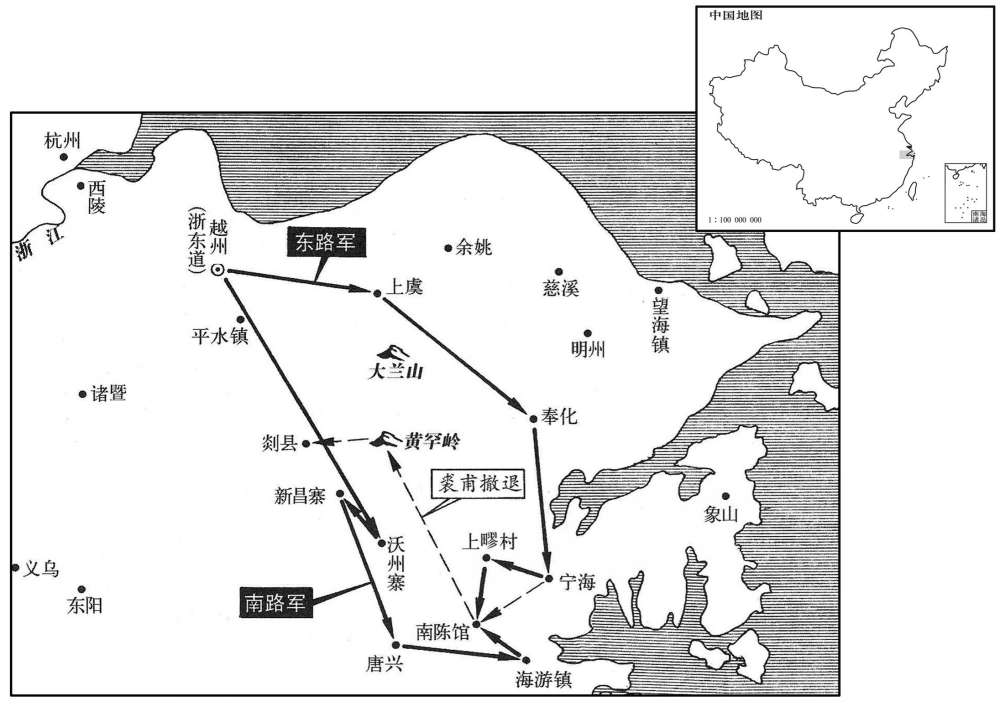
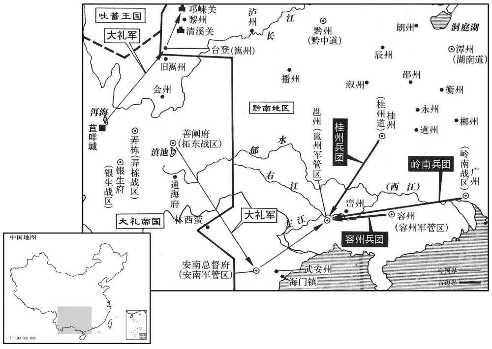
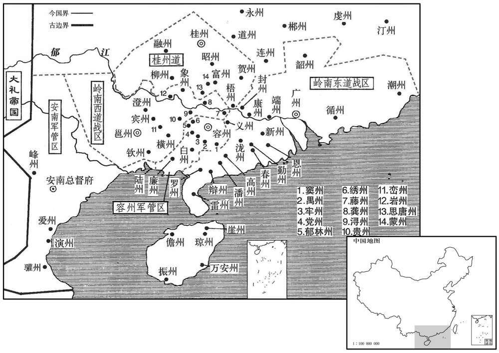
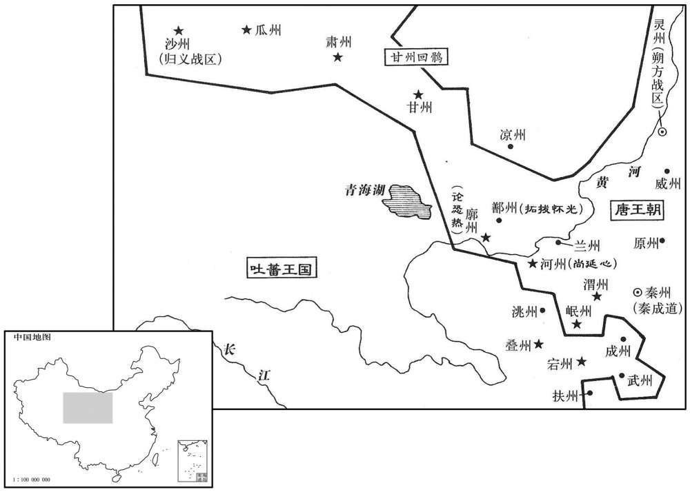
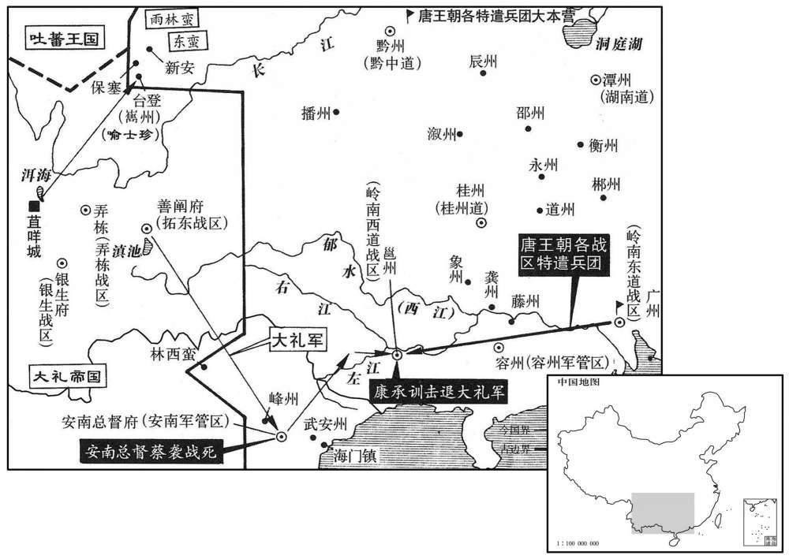

卷次与人物目录 / 卷250
资治通鉴 · 卷第二百五十【唐纪六十六】
公元860年至公元867年 · 原文、白话与胡三省注
本页按胡注本编排保存全卷内容。白话采用本站所据译本，未可靠对应的内容另列说明；事件标题用于定位，并非原书文字。
本卷共152段原文，143段有译文对应，9段缺译或待核对。
卷第二百五十【唐纪六十六】起上章执徐（庚辰），尽强圉大渊献（丁亥），凡八年
卷首原文与注释
懿宗昭圣恭惠孝皇帝上〔讳漼，宣宗长子也初讳温，嗣位更名〕
公元860年 · 唐懿宗昭圣恭惠孝皇帝咸通元年
咸通元年〔（庚辰、八六○）是年十一月，始改元咸通。〕
上传原文的注释括号有异常，字符原样保留；无法可靠划分的段落默认全文显示。
本年事件索引（现代整理）
- 浙东军与裘甫战于桐柏观
- 浙东官军败于剡西
- 宣宗葬于贞陵
- 白敏中入朝坠陛受伤
- 裘甫聚众称王，改元罗平
- 郑祗德屡表告急
- 朝廷任王式为浙东观察使
- 王式进言讨裘甫须增兵
- 裘甫分兵攻掠衢婺等州
- 王式将出兵，裘甫犹豫不决
- 王式整顿军纪抵达柿口
- 王式入越州整军
- 洪师简、许会能率部投降
- 王式清除越州内奸
- 王式招募降卒组建骑兵
- 王式以候骑代替烽燧
- 王式整编诸军分路讨贼
- 南路军攻拔沃州、新昌寨
- 白敏中三表辞相不许
- 东路军破孙马骑，南路军破刘暀
- 王式增兵围剿裘甫
- 高罗锐攻克宁海，裘甫困守
- 薛调进言减免战时横征
- 袁王李绅卒
- 东路军大破裘甫并擒获
- 官军攻克大兰山，刘从简被杀
- 王式解释平剡用兵方略
- 宣宗封李鞆为信王
- 裘甫押至京师处斩
- 卫王李灌卒
- 白敏中第五次辞位获任中书令
- 刘邺请为李德裕追复官爵
- 夏侯孜、毕諴任同平章事
- 安南都护收复播州
- 懿宗祀圜丘并改元
- 安南土蛮引南诏攻陷交趾
春，正月，乙卯，浙东军与裘甫战于桐柏观前，〔桐柏观在台州唐兴县天台山，宋改唐兴县为天台县，桐柏观赐额崇道观。观，古玩翻。〕范居植死，刘勍仅以身免。乙丑，甫帅其徒千余人陷剡县，〔帅，读曰率。〕开府库，募壮士，众至数千人；越州大恐。
春季，正月，乙卯（初四），唐浙东官军与裘甫军在桐柏观前交战，唐讨击副将范居植战死，讨击副使刘只身逃出，仅得免死。乙丑（十四日），裘甫率领部下徒众一千余人攻陷剡县，打开县府仓库，召募壮丁，部众发展到好几千人，使越州上下一片慌恐。
时二浙久安，人不习战，甲兵朽钝，见卒不满三百；〔见，贤遍翻。〕郑祗德更募新卒以益之，军吏受赂，率皆得孱弱者。〔孱，鉏山翻。〕祗德遣子将沈君纵、副将张公署、望海镇将李珪〔子将，小将也。望海镇在明州界，今定海县即其地。元和十四年，浙东观察使薛戎奏望海镇去明州七十余里，俯临大海，与新罗、日本诸蕃接界。将，即亮翻；下同。〕将新卒五百击裘甫。二月，辛卯，与甫战于剡西，贼设伏于三溪之南，而陈于三溪之北，〔三溪，在今嵊县西南，一溪自新昌县东来，一溪自磕下山南来，与新昌溪会于湖塍，屈西北流，溪流若三派然，故谓之三溪。〕壅溪上流，使可涉。既呔，阳败，官军追之，半涉，决壅，水大至，官军大败，三将皆死，官军几尽。〔几，居依翻。〕
当时两浙地区由于长期平安无事，人民不习战阵，武器甲杖也都腐朽锈钝，现役士卒不满三百人；浙东观察使郑德增募新兵来补充军队，但军吏接受贿赂，所召新兵几乎全是软弱无能者。郑德派遣部将沈君纵、副将张公署、望海镇将李率领新兵五百人去袭击裘甫。二月，辛卯（初十），官军与裘甫军战天剡县以西，裘甫军在三溪之南设下埋伏，而在三溪之北虚摆阵势，堵溪水上流，使人可在溪水下游涉渡。既开始交战，裘甫军假装败走，官军随后追击，至溪水下游，当官军一半人涉过溪水时，贼军将上流堵水闸决开，大水袭来，官军大败，三位领兵将领都战死，部下官军几乎全部丧命。
丙申，葬圣武献文孝皇帝于贞陵，〔此谥，正葬贞陵陵中册谥也。贞陵在京兆云阳县西北四十里。〕庙号宣宗。
丙申（十五日），唐懿宗率群臣将圣武献文孝皇帝李忱安葬于贞陵，并
给他定庙号称宣宗。
丙午，白敏中入朝，坠陛，伤腰，肩舆以归。
两版字句有差异，建议核对原文。
丙午（二十五日），白敏中来到朝廷朝见唐懿宗，从马上不慎坠落于地，将腰摔伤，唐懿宗让他坐上轿子回去。
于是山海诸盗及他道无赖亡命之徒，四面云集，众至三万，分为三十二队。其小帅有谋略者推刘暀，〔帅，所类翻。暀，于放翻，又乎旷翻。〕勇力推刘庆、刘从简。群盗皆遥通书币，求属麾下。甫自称天下都知兵马使，改元曰罗平，铸印曰天平。大聚资粮，购良工，治器械，声震中原。〔治，直之翻。〕
由于裘甫打败浙东官军，山林海岛中的盗贼以及其他地方的无赖亡命之徒，四面云集于裘甫的旗帜之下，部从发展到三万余人，分为三十二个队。各队小帅中较有谋略者首推刘，有武勇力气者推刘庆、刘从简。群盗都由远外地方向裘甫通信送款，要求归属于裘甫麾下。裘甫自称天下都知兵马使，改元
称罗平，铸造的大印上刻着天平。于是大量聚积资财粮草，雇请优良的工匠，制造军用器械，其浩大的声势震动了中原。
郑祗德累表告急，且求救于邻道；浙西遣牙将凌茂贞将四百人、宣歙遣牙白琮将三百人赴之。〔歙，书涉翻。〕祗德始令屯郭门及东子江，〔越州有东小江、西小江、东小江出剡溪，至曹娥百官渡而东入海。西小江出诸暨，至钱清渡而东入于海。皆曰小江者，以浙江为大江也。〕寻复召还府中以自卫。〔复，扶又翻。〕祗德馈之，比度支常馈多十三倍，而宣、润将士犹以为不足。〔史言元帅威令不振，则惠亵而将士不以为德。度，徒洛翻。〕宣、润将士请土军为导，以与贼战；诸将或称病，或阳坠马，其肯行者必先邀职级，〔职者，军职。级者，勋级。〕竟不果遣。贼游骑至平水东小江，〔越州，会稽县东南有平水镇，又东踰山，即小江也。北又一小江，源出大木山，南流合于剡江，故系平水东，以别东小江。〕城中士民储舟裹粮，夜坐待旦，各谋逃溃。
浙东观察使郑德一再向朝廷上表告急，并且向附近相邻的道求救；浙西道派遣牙将凌茂贞率领四百人、宣歙镇派遣牙将白琮率领三百人赶往援救。郑德开始命令援军屯驻于城郭大门外及东小江边，不久又将他们如还帅府，用以守卫。郑德大肆犒赏援军，所赏钱物比朝廷度支一般发给的要多十三倍，而宣州、润州的将士仍然不满足。宣州、润州将士要求当地土军为先导，以便与裘甫贼军交战；浙东军诸将领有的假称患病，有的假装从马上跌于地上，而肯出征的人又必先要求提升官职级别，以致军队竟派不出去。裘甫贼军的游骑来到平水以东的小江，浙东城中士民准备好船只，带不粮食，从夜晚一直坐到天亮，各自谋求逃散。
朝廷知祗德懦怯，议选武将代之。夏侯孜曰：「浙东山海幽阻，可以计取，难以力攻。西班中无可语者。〔唐凡朝会，文官班于东，武官班于西，故谓武臣为西班。〕前安南都护王式，虽儒家子，〔王式，王播弟，起之子也，旧史以为播子。〕在安南威服华夷，名闻远近，〔闻，音问。〕可任也。」诸相皆以为然。〔相，息亮翻。〕遂以式为〔【章：十二行本「为」下有「浙东」二字；乙十一行本同；孔本同；张校同。】〕观察使，征祗德为宾客。〔太子宾客，闲慢局员也。〕
朝廷知道郑德懦弱胆怯，议论要选择武将去替代他。夏侯孜说：“浙东地方山海幽深，阻拦通路，只可以用计谋攻取，难以用强力夺得。朝中武将没有谁可以说是有智谋。前安南都护王式，虽然是儒家文士的儿子，却在安南使当地华人夷人都归服于他，他的威武之名远近都知道，可以任用他往浙东征讨裘甫贼。”诸位宰相都认为夏侯孜说得有理。于是唐懿宗任命王式为浙东观察使，将郑德徵归朝廷，任为太子宾客。
三月，辛亥朔，式入对，上问以讨贼方略。对曰：「但得兵，贼必可破。」有宦官侍侧，曰：「发兵，所费甚大。」式曰：「臣为国家惜费则不然。〔为，于伪翻。〕兵多贼速破，其费省矣。若兵少不能胜贼，延引岁月，贼势益张，〔张，知亮翻。〕则江、淮群盗将蜂起应之。国家用度尽仰江、淮，〔仰，牛向翻。〕若阻绝不通，则上自九庙，下及十军，〔肃宗以后，羽林、龙武、神武、神威、神策皆分左右，号北门十军。元和二年，省神武军，明年，又省神威军，以其兵骑分隶左右神策，而犹存十军之名。〕皆无以供给，其费岂可胜计哉！」〔胜，音升。〕上顾宦官曰：「当与之兵。」乃诏发忠武、义成、淮南等诸道兵授之。
三月，辛亥朔（初一），王式入朝问对，唐懿宗问王式有关讨伐裘甫贼军的方略。王式回答说：“只要给我军队，贼军必然可以攻破。”有宦官侍立在唐懿宗近侧，说：“调发军队，所花费的军费太大。”王式说：“我为国家珍惜费用就不是这样。调发的军队多，贼军可迅速消灭，所用军费反而可以节省。若调发军队少，不能战胜贼军，或者是将战事拖延几年几月，贼军的势力日益壮大，江、淮之间的群盗就将蜂起响应。现在国家的败政用度几乎全部仰仗于江、淮地区，如果这一地区被叛乱的贼众阻绝，使财赋输送之路不通，就会使上自九庙，下及北门十军，都没有办法保证供给，那样耗费的费用岂可胜计！”唐懿宗望着宦官说：“应当给王式调兵。”于是颁下诏书，调发忠武、义成、淮南等诸道军队交给王式指挥。
裘甫分兵掠衢、婺州。婺州押牙房郅、散将楼曾、〔散将者，牙将之散员也。散，悉但翻。将，即亮翻；下同。〕衢州十将方景深将兵拒险，贼不得入。又分兵凉明州，明州之民相与谋曰：「贼若入城，妻子皆为葅醢，况货财，能保之乎！」乃自相帅出财募勇士，〔帅，读日率。〕治器械，澍栅，浚沟，断桥，为固守之备。〔治，直之翻。断，丁管翻〕贼又遣兵掠台州，破唐兴。〔吴分章安之西界置始平县，晋改为始丰县，宋废。唐武德初，分临海置唐兴县，宋改曰天台。九域志：在台州西一百一十里。〕癸酉，入余姚，杀丞、尉；〔余姚，汉古县，唐属越州。九域志：在州东一百四十七里。宋白曰：余姚旧县在余姚山西。风土记云：舜支庶所封。舜胜姚，故曰余姚。〕东破慈溪，入奉化，抵宁海，杀其令而据之；〔开元二十六年，分明州之酇县置慈溪县，在州西二十七里；又分劗县置奉化县，在州南八十里。武德四年，分临海县置宁海县，属台州。九域志：在州东北一百七十里。〕分兵围象山。所过俘其少壮，〔少，诗照翻。〕余老弱者蹂践杀之。〔蹂，忍久翻。践，慈演翻。〕
裘甫派兵分别攻掠衢州、婺州。婺州军府押牙房郅、散将楼曾、衢州十将之一的方景深等人率领军队拒守险要，贼军无法进入。裘甫又分兵攻掠明州，明州的民众相聚在一起谋划说：“贼军如果进入城中，我们的妻子儿子都要被剁成肉酱，何况家中的财产货物，就更加难以保存了！”于是相率捐出自己的财产来招募勇士，制造兵器枪械，树立栅栏，疏浚壕沟，截断桥梁，为固守城池作好准备。贼寇又派兵攻掠台州攻破唐兴县。已巳（十九日），裘甫亲自率领军队一万余人攻掠上虞县，并焚烧县城。癸酉（二十三日），裘甫率军攻入余姚县，杀县丞、县尉；又向东攻破慈溪县，进入奉化县，又抵达宁海县，杀宁海县令，并将宁海县城占据；分一部分军队进围象山县。裘甫军在所过的地方俘虏少壮居民，所余老弱居民在遭受蹂躏摧残后，全部被杀死。
及王式除书下，浙东人心稍安。〔下，遐稼翻。〕裘甫方与其徒饮酒，闻之不乐。〔闻王式来，心有所惮。乐，音洛。〕刘暀叹曰：「有如此之众而策画未定，良可惜也！今朝廷遣王中丞将兵来，〔王式盖检校御史中丞。〕闻其智勇无敌，不四十日必至。兵马使宜急引兵取越州，凭城郭，据府库，遣兵五千守西陵，循浙江筑垒以拒之〔西陵渡在越州西一百二十二里，今西兴渡是也。吴越王钱镠恶西陵之名，改曰西兴。〕大集舟舰。得间，则长驱进取浙江，〔间，古苋翻。〕过大江，掠扬州货财以自实，〔扬州，江、淮之都会也，转运盐铁使及度支之货财聚焉，故刘暀朵颐。〕还修石头城而守之，宣歙、江西必有」响应者。遣刘从简以万人循海而南，袭取福建。如此，则国家贡赋之地尽入于我矣；〔唐自中世以后，贡赋皆仰东南，故云然。〕但恐子孙不能守耳，终吾身保无忧也。」〔观刘暀策画，岂可以小盗待之乎！〕甫曰：「醉矣，明日议之！」暀以甫不用其言，怒，阳醉而。出有进士王辂在贼中，贼客之。辂说甫曰：「如刘副使之谋，乃孙权所为也。彼乘天下大乱，故能据有江东；今中国无事，此功未易成也。〔说，式芮翻。易，以豉翻。〕不如拥众据险自守，陆耕海渔，急则逃入海岛，此万全策也。」甫畏式，犹豫未决。
当王式任浙东观察使的委任文书颁发下后，浙东地区的人心才稍微安定。裘甫正与部下徒从饮酒，得知王式到来，很不高兴。刘唉叹说：“我们有如此众多的军队，而战略计划还没有制定，实在是可惜！今天朝廷派遣王中丞率军队来镇压，听说这个人智勇双全，所向无敌，不过四十天时间必然会赶到。裘将军您应该赶快率领军队攻取越州，凭藉州高大的城郭，占据官府的仓库，再派遣五千军队驻守西陵，沿浙江修筑堡垒，以抗拒王式所率官军，同时要大量地收集各种船舰。如果获得机会，就率大军长驱进取浙西，渡过长江，掠取扬州的货物财宝来充实自己的军资费用，回军后，修缮石头城坚守，这时宣歙、江西地区必定会有人起而响应。您再派遣刘从简率领军队一万人沿海南征，袭取福建。这样，就使唐朝的东南贡赋之地全部归于我们手中；虽然说我们的子孙恐怕不能守住东南半壁山河，但我们这辈子可以保证无忧虑了。”裘甫说：“你喝醉了，明天再商议吧！”刘因为裘甫不用他的战略谋划，十分愤怒，假装喝醉走出。有一位名叫王辂的唐朝进士在裘甫军中，被当作宾客受到优礼。王辂对裘甫说：“如果按兵马副从使刘的谋划行事，正是当年孙权所做的割据江东的事业。但孙权是乘天下大乱的机会，因而能保据江东；如今中原无事，划江称帝诉功业不容易办成。不如率领部众去占据险要地方，自守天涯一角，在陆地上耕种，在大海中捕鱼，事危急时就逃入海岛，这才是万全的计策。”裘甫畏惧王式，犹豫而不能决。
夏，四月，式行至柿口，义成军不整，式欲斩其将，久乃释之〔将，即亮翻。〕自是军所过若无人。至西陵，裘甫遣使请降，式曰：「是必无降心，直欲窥吾所为，且欲使吾骄怠耳。」乃谓使者曰：「甫面縳以来，当免而死。」〔而，汝也。〕
夏季，四月，王式率大军束到柿口，义成军的军容不整，王式想把领兵将领斩首，过了一段又把他释放，于是军队号令齐一，队形整齐，所过这处如入无人之境。行至西陵，裘甫派遣使者来请求投降，王式说：“裘甫必定没有投降之心，实际上是想来刺探我的动静，并想用投诚的姿态使我军骄傲，放松警惕。”于是对使者说：“如果裘甫把自己捆绑起来，亲自来投降，当免他一死。”
乙未，式入越州，既交政，为郑祗德置酒，〔为，于伪翻。〕曰：「式主军政，不可以饮，监军但与众宾尽醉。」迨夜，继以烛，曰：「式在此，贼安能肪人乐饮！」〔乐，音洛；下同。〕丙，饯祗德于远郊，复乐饮而归。〔杜子替周礼注曰：五十里为近郊，百里为远郊。以今地里考之，越州百里至萧山县，王式岂能送郑祗德至此邪！记事者华言耳。复，扶又翻。〕于是始修军令，告馈饷不足者息矣，称疾卧家者起矣，先求迁职者默矣。
乙未（十五日），王式进入越州，与郑德交接政务后，即为郑德设置酒宴，王式说：“我因为要主管军政大事，不能饮酒，监军以下的将校可以与众宾客痛饮尽醉。”至夜晚，点上蜡烛继续宴饮，王式说：“有我在这里叛贼怎么能妨碍我们饮酒作乐。”丙申（十六日），王式到远郊为郑德饯行，再次欢快痛饮而归。于是开始重新修订军令，先前宣告军饷用度不足的人不再吭声了，声称患病卧床的人也起来干事了，要求先升官再出战的人也不再说话了。
贼别帅洪师简、许会能帅所部降，〔别帅，所类翻。能帅，读曰率。降，户江翻。〕式曰：「汝降是也，当立」效以自异。〔立效，谓立功也。〕使帅其徒为前锋〔帅，读曰率。〕与贼呔有功，乃奏以官。
裘甫手下的小头目洪师简、许会能率所部投降官军，王式说：“你们归降是好事，应当立功自效，以区别于贼寇。”于是让他们率领原先的部众充当先锋，与裘甫军作战，作战有功的，上奏朝廷授以官爵。
先是，贼谍入越州，军吏匿而饮食之。〔先悉荐翻。谍，徒协翻。饮，于禁翻。食，祥吏翻。〕文武将吏往往潜与贼通，求城破之日免死及全妻子；或诈引贼将来降，实窥虚实，城中密谋屏语，〔屏，必郢翻。〕贼皆知之。式阴察知，悉浦索，斩之；刑将吏尤横猾者；索，山客翻。横，户孟翻。严门禁，无验者不得出入，警夜周密，贼始不知我所为矣。
先前，裘甫派间谍潜入越州，越州军府官吏竟把他们藏起来，给他们供应饮食。州府文武将吏也往往暗中与裘甫军通款，以求城被贼军攻破的日子，能免死并存全妻子儿女；有的人假装引裘甫手下的将领来投降，实际上是来窥探军情虚实；城中官府的密谋和暗语，裘甫军全都知道。王式暗中将这一切查明，把通敌将吏全部逮捕，并处斩；又对州府中特别专横狡猾的将吏用刑，严格门禁法规，没有经过检查的人不得出入，夜里安排周密的警戒，裘甫贼军于是不再能探知官军的虚实了。
式命诸县开仓廪以赈贫乏，或曰：“贼未灭，军食方急，不可散也。”式曰：“非汝所知。”
王式命令越州所属诸县打开仓库的储粮，用以赈救贫若乏食的百姓，有人说：“裘甫贼寇还未消灭，军粮正急于要用，不可散发。”王式说：“这就不是你所能知道的了。”
官军少骑，〔卒，诗沼翻。〕式曰：「吐薐、回鹘比配江、淮者，〔比，毗至翻。〕其人习险阻，便鞍马，可用也。」举籍府中，得骁健者百余人。〔凡吐蕃、回鹘之配隶浙东观察府者，举其籍而取之。〕虏久羁旅，所部遇之无状，〔无善状也。〕困餧甚；〔餧，与馁同。〕式既犒饮，又赒其父母妻子，皆泣拜讙呼，〔讙，与喧同。〕愿效死，悉以为骑卒，使骑将石宗本将之。凡在管内者，皆视此籍之，又奏得龙陂马二百匹，〔龙陂，汉颖川郲县之摩陂也。唐在汝州界置马监。宋白曰：元和十三年，十一月，赐蔡州群牧号龙陂牧。〕于是骑兵足矣。
唐官军缺少骑兵，王式说：“吐蕃、回鹘的降俘发配到江、淮的人不少，这些人在艰难险阻的环境中生活惯了，熟悉鞍马骑射，可以起用他们。”于是到官府查名籍，得到骁勇强健的吐蕃族、回鹘族人一百余。这些胡虏远离家乡，被流放看管的年月已久，看管他们的军吏对他们凶恶狠毒，又接济他们的父母妻儿，于是都感恩欢呼哭拜，愿为王式效劳出死力，王式将他们配为骑兵，让骑兵将领石宗本统率他们。凡是流放在越州管辖境内的吐蕃、回鹘族人，均按照这种办法征集来，又上奏求得汝州龙破监好马二百匹，于是骑兵充足了。
或请为烽燧以詷贼远近众寡，〔詷，翾正翻，又火迥翻。〕式笑而不应，使乘健马，少与之兵，以为候骑；〔少诗沼翻。〕众怪之，不敢问。
有人请求建设烽火台，用来警报来犯贼寇的远近、众寡，王式只是笑一笑，而不予答应；王式又选懦弱的士兵，让他们骑强健的战马，配以很少的武器作为侦察骑兵，部下众人感到奇怪，但也不敢多问。
于是阅诸营见卒〔见，贤遍翻。〕及土团子弟，得四千人，使导军分路讨贼；府下无守兵，更籍土团千人以补之。乃命宣歙将白琮、浙西将凌茂贞帅本军，北来将韩宗政等帅土团，合千人，示宗本帅骑兵为前锋，自上虏趋奉化，解象山之围，号东路军。〔将，即亮翻。帅，读曰率。趋，七喻翻。〕又以义成将白宗建、忠〔【张：「忠」下脱「武」字。】〕将游君楚、〔唐无建忠军，按此时发忠武军从王式，史逸「武」字也。白宗建，人姓名。〕淮南将万璘帅本军与台州唐兴军合，号南路军。令之曰：「毋争险，易，〔易以豉翻。〕毋焚庐舍，毋杀平民以增首级！平民胁从者，募降之。〔降，户江翻。〕得贼金帛，官无所问。俘获者，皆越人也，释之。」
王式察看越州城内诸军营，当时有州府士兵以及土团私家子弟四千人，王式让他们引导入援官军分路讨伐贼寇；越州府下没有守兵，王式又再征土团民兵一千人来补充。然后王式命令宣歙将领白琮、浙西将领凌茂贞率领本部军队，北来将领韩宗政等人率领土团，合起来有一千人，由石宗本率领骑兵为前锋，从上虞县开往奉化县，去解象山之围，这支军队号称东路军。王式又命令义成镇将领白宗建、忠武镇将领游君楚、淮南将领万率令本部军队，与台州军会合，号称南路军。王式下令说：“不管是艰险还是容易，各军不要对所布置的任务进行争夺，不准焚烧老百姓的房屋茅舍，不准杀平民来增加首级冒功，平民被迫参加贼寇的，应招募他们归降。缴获贼寇的金帛财产，官府不加过问，擒获的俘虏，都是越州本地人，放他们回家。”
癸卯，南路军拔贼沃州寨，〔沃州，在今越州新昌县东南。〕甲辰，拔新昌寨，〔新昌，时属剡县界。今置新昌县，在越州东南二百二十里。〕破贼将毛应天，进拔〔【章：十二行本「拔」作「抵」；乙十一行本同，孔本同。】〕唐兴。
癸卯（二十三日），南路军攻拔裘甫贼军的沃州寨，甲辰（二十四日），又攻拔新昌寨，击破贼将毛应天，进而又攻拔唐兴县。
白敏中三表辞位，上不许。右补阙王谱上疏，以为：「陛下致理之初，乃宰相尽心之日，不可暂阙。敏中自正月卧矣，今四月矣，陛下虽与他相坐语，未尝三刻，天下之事，陛下尝暇与之讲论乎！〔相，息亮翻。〕愿听敏中罢去，延访硕德，以资聪明。」已酉，贬谱为阳翟令。谱，珪之六世孙也。〔王珪事太宗，以直闻。谱，博古翻。〕五月，庚戍朔，给事中郑公舆封还贬谱敕书。上令宰相议之，宰相以为谱侵敏中，竟贬之。
白敏中三次向唐懿宗上表辞宰相位，唐懿宗不批准。右补阙王谱上疏，认为：“陛下即皇帝位不久，治理天下大事，尚缺乏经验，这正是宰相辅臣尽心出力的时刻，因此宰相不可暂缺。白敏中自从今年正月以来就患病卧床，至今已经四个月了，陛下虽然与他坐着谈论政事，也从不超过三刻，天下大事多如乱麻，您哪有时间与他计论呢！希望批准白敏中辞职的请求，另外寻访有才能德望的人，来帮助您更加圣明。”已酉（二十九日），唐懿宗将王谱贬官为阳翟县令。王谱是王的六世孙。五月，庚戌朔（初一），给事中郑公舆将的诏书封还。唐懿宗命令宰相议论这件事，宰相们认为王谱官的诏书封还。唐懿宗命令宰相议论这件事，宰相们认为王谱侵犯了白敏中，最后还是将王谱贬了官。
辛亥，浙东东路军破贼将孙马骑于宁海。戊午，南路军大破贼将刘暀、毛应天于唐兴南谷，斩应天。
辛亥（初二），浙东东路军于宁海击败裘甫部将孙马骑率领的军队。戊午（初九），南路军在唐兴县南谷大破裘甫部将刘、毛应天率领的军队，并在战阵上斩毛应天。
先是，王式以兵少，奏更发忠武、义成军及请昭义，诏从之。〔先，悉荐翻。〕三道兵至越州，式命忠武将军张茵将三百人屯唐兴，断贼南出之道；〔断，音短；，下同。〕义成将高锐将三百人益以台州土军，径趋宁海，〔趋，七喻翻。〕攻贼巢穴；昭义将閖跌戣将四百人，〔閖，奚结翻。跌，徒结翻。戣，渠龟翻。〕益东路军，断贼入明州之道。庚申，南路军大破贼于海游镇，〔海游镇，在宁海南九十里。〕贼入甬溪洞。〔甬溪洞，在宁海西南百余里，属唐兴县界，又西则楢溪，产铁。〕戊辰，官军屯于洞口，贼出洞战，又破之。己已，高罗锐袭贼别帅刘平天寨，破之。〔帅，所类翻。〕自是诸军与贼十九战，贼连败。刘暀谓裘甫曰：「向从吾谋入越州，宁有此困邪！」王辂等进士数人在贼中，皆衣绿，〔衣，于既翻。〕暀悉斩之，曰：「乱我谋者，此青虫也。」
起先，王式因为军队少，向唐懿宗奏请再调发忠武军、义成军，并要求调昭义军，唐懿宗表示同意。忠武、义成、昭义三道兵来到越州，王式命令忠武军将领张茵率领三百人屯驻于唐兴县，切断裘甫军逃往南方的道路；命令义成军将高罗锐率领三百人，加上台州地方军队，径直奔赴宁海县，进攻裘甫贼军的巢穴；命令昭义军将领跌率领四百人，去加强东路军，切断裘甫军进入明州的道路。庚申（十一日），南路在海游镇大破裘甫贼军，裘甫军队逃入甬溪洞。戊辰（十九日），唐官军于洞口屯驻，裘甫出洞交战，又被打败。已巳（二十日），高罗锐袭击裘甫部将刘平天的营寨，将营寨攻破。到此为止唐诸路军队与裘甫贼军作战十九次，裘甫军边续失败。刘对裘甫说：“如果您能听从我的谋划，进入越州，那会有今天这样的困境呢！”王辂等几个唐朝科举入第的进士在裘甫军中，都穿绿衣做小官，刘将他们全部斩首，说：“破坏我的计谋的，正是你们这些青虫！”
高罗锐克宁海，其逃散之民，得七千余人。王式曰：「贼窘且饥，必逃入海，入海则岁月间未可擒也。」命罗锐军海口以拒之。〔海口在宁海东四十余里。〕又命望海镇将云思益、浙西将王克容将水军巡海澨。〔澨，市制翻。水际曰澨。〕思益等遇贼将刘〔【章：孔本「刘」下有「从」字；张校同。】〕简于宁海东，贼不虞水军遽至，〔虞，度也。〕皆弃船走山谷，〔走，音奏。〕得其船七七，尽焚之。式曰：「贼无所逃矣，惟黄罕岭可入剡，〔黄罕岭，在奉化县西北，剡县之东，其路深险。度黄罕岭，则平川钿十里至剡。〕恨无兵以守之。虽然，亦成擒矣！」裘甫既失宁海，乃帅其徒屯南陈馆下，〔南陈馆在宁海西南六十余里。帅，读曰率。〕众尚万余人。辛未，东路军破贼将孙马骑于上靹村，〔上靹村在宁海西北四十余里、靹，力留翻。今谓之上寮山。〕贼将王皋惧，请降。
高罗锐攻克宁海县，收集光散在外的平民百姓，得七千余人。王式说：“贼军窘迫，加上饥饿，必然要逃入大海，如果贼寇逃入海岛，那么今年几个月间是不能擒获他们的。”于是命令高罗锐驻军海口拒守，又命令望海镇将领云思益、浙西将领王克容率领水军于海岸水际巡逻。云思益等率水军在宁海以东海面与裘甫军将领刘从简所率船队遭遇，裘甫军船队没有料到官军水师这么快就赶到，都将船抛弃，上岸窜入山谷，云思益的水军缴获裘甫军十七条船，全部烧毁。王式说：“贼军已没有什么地方可逃了，只有黄罕岭可以进入剡县，可恨没有兵守黄罕岭。虽然这样，裘甫贼也可擒获！”裘甫既失去宁海，于是率领部下徒众屯驻宁海县西南六十余里处的南陈馆下，部众仍然有一万余人。辛未（二十二日），东路军在宁海西北四十里的上村击败裘甫军将领孙马骑的部队，王畏惧官军，请求投降。
壬申，右拾遣内供奉薛调上言，以为：「兵兴以来，赋敛无度，〔上，时掌翻。敛，力赡翻。〕所在群盗，半是逃户，固须翦灭，亦可闵伤。望敕州县税外毋得科率，仍敕长吏严加纠察。」从之。
壬申（二十三日），右拾遗内供奉薛调向唐懿宗上言，认为：“自从兴兵征讨以来，赋敛税科无度，地方上的群盗，多半都是逃亡的农户，固然应该消灭他们，但他们处境也很可怜，令人伤心。希望陛下向州县颁布诏敕，凡朝廷所定的正税以外，不得再有课税门目，并且敕令有关官吏，对税目加以严格的纠察监督。”唐懿宗表示同意。
袁王绅薨。〔绅，顺宗子〕
袁王李绅去世。
戊寅，浙东东路军大破裘甫于南陈馆，斩首数千级，贼委弃缯帛盈路，〔缯，慈陵翻。〕以缓追者。閖跌戣令士卒：「敢顾者斩！」毋敢犯者。贼果自黄罕岭遁去，六月，甲申，复入剡。〔复，扶又翻；下同。〕诸军失甫，不知所在，义成将张茵在唐兴获俘，将苦之，俘：「曰贼入剡矣。苟舍我，我请为军导。」从之。茵后甫一日至剡，壁其东南。府中闻甫入剡，复大恐，王式曰：「贼来就擒耳！」命趣东、南两路军会于剡，〔趣，读曰促。〕辛卯，围之。贼城守甚坚，攻之，不能拔；诸将议绝溪水以渴之，〔剡城东南临溪，西北负山，城中多凿井以引山泉，非绝溪水所能渴，作史者乃北人臆说耳。今浙东诸县皆无城，独剡县有城，犹为完壮。〕贼知之，乃出战。三日，凡八十三战，贼虽败，官军亦疲。贼请降，诸将出〔【章：十二行本「出」作「以」；乙十一行本同；孔本同；熊校同。】〕白式，式曰：「贼欲少休耳，〔少，诗沼翻。〕益谨备之，功垂成矣。」贼果复出，又三战。庚子夜，裘甫、刘暀、刘庆从百余人出降，遥与诸将语，离城数十步，官军疾趋，断其后，〔离，力智翻。断，音短。〕遂擒之。壬寅，甫等至越州，式腰斩暀、庆等二十余人，械甫送京师。〔考异曰：平剡录曰：「诸军围贼于剡，贼悍甚，其所谓女军者，亦乘城摘砾以中人。三日，凡八十二战，贼虽衄，官军亦疲。裘甫佯言乞降，诸将使骑来白。公曰：『贼惫蹔休耳，谨备之。』仍遣押牙薛敬义谓诸将曰：『功成矣，勉之，勿怠也│』果复三战，二十一日夜，甫与刘暀、刘庆十余辈又从百余人出，遥与诸将语，伺我军之懈，将使勇者溃围焉。诸将得公诫，夜皆设伏于营前。甫辈离城数十步，伏兵疾走以间之，锐师数百复继之，城中贼不出。甫遽甚不知所为，遂成擒焉。至是，用兵六十六日矣。二十三日，縳致府城，公于衙门陈兵以见．执其徒刘暀、刘庆二十余辈，三斩之，械裘甫献阙下。」玉泉子见闻录曰：「王式讨裘甫。甫始起于剡，既为官军所败，复入于剡，城坚卒锐，不可遽拔。式乃约降，许奏以金吾将军，甫许焉，其将刘暀独以为不可。比反越城，左右则械手以木，曳颈以组。甫曰：『吾既已降，何用是为﹖』左右曰『法也。到越则释去，公且行，有命矣。』既至，式登南楼俟之，曰；『裘甫何罪，罪皆刘暀辈。』命三斩之。暀顾谓甫曰：『君竟拜金吾乎！』斩甫于长巿东市。初，甫之入剡也，虽已累败，向使城守翆岁，未可平也。玉泉子曰：古人有言，杀降不祥。李广所以不侯，良有以也！王公亦不闻大贵。郑公述平剡录人何曲笔哉！虽骤历清显，而卒以丧明不复起，可不慎哉！」按二书所言莫知孰是。然裘甫在剡城，穷困已极，势不能久，式不必更以诈诱之，或者诸将为之，不可知也。甫之出降也，或欲突走，或被诱而来，皆不可知，要之为出城乞降，官军因邀断其后擒之耳。
本段缺少可靠对应白话，原文完整保留；未使用生成译文。

剡城犹未下，诸将已擒甫，不复设备。刘从简帅壮士五百突围走；诸将追至大兰山，〔今明州奉化县西北有大兰山，山在越州分界。复，扶又翻。帅，读曰率。〕从简据险自守，秋，七月，丁已，诸将共攻克之。台州刺州史李师望募贼相捕斩之以自赎，所降数百人，得从简首，献之。〔大兰既破，刘从简走入台州界，方为其党所杀。〕
剡城仍未攻下，唐官军诸将因为已把裘甫擒获，不再布置防备。刘从简率领壮士五百人突围逃走；官军诸将追到奉化县西北的大兰山，刘从简在山上据险自守，秋季，七月，丁已（初九），唐官军诸军将领率领所部士兵一同攻山，将大兰山攻克。台州刺史李师望招募贼军士兵，让他们去捕杀还没有投降的同伙，以赎免自己的罪，又迫使贼军数百人投降，并获得刘从简的首级，献给上司。
诸将还越，式大置酒。诸将乃请曰：「芋等生长军中，久更行陈，〔长，知两翻。更，工衡翻。行，户刚翻。〕今年得从公破贼，然私有所不谕者，敢问：公之始至，军食方急，而遽散以赈贫乏，何也﹖」式曰：「此易知耳。〔易，以豉翻。〕贼聚谷以诱饥人，吾给之食，则彼不为盗矣。且诸县无可守兵，贼至，则仓谷适足资之耳。」又问「不置烽燧，何也﹖」式曰：「烽燧所以趣救兵也，〔趣，读曰促。〕兵尽行，城中无兵以继之，徒惊士民，使自溃乱耳。」又问：「使懦卒为候骑而少给兵，何也﹖」式曰：「彼勇卒操利兵，〔操，七高翻。〕遇敌且不量力而鬬，鬬死，则贼至不知矣。」皆曰：「非所及也！」〔自至德以来，浙东盗起者再，袁晁、裘甫是也。裘甫之祸烈于袁晁。袁晁之难，张伯仪平之，通鉴所书，数语而已。今王式之平裘甫，通鉴书之，视张伯仪平袁晁事为详。盖唐中世之后，家私史。王式，儒家子也。成功之后，纪事者不无张大，通鉴因其文而序之，弗觉其烦耳。容斋随笔曰：通鉴书讨裘甫事用平剡录，盖亦有见于此。考异三十卷，辩订唐事者居太半焉，亦以唐私史之多也。
本段缺少可靠对应白话，原文完整保留；未使用生成译文。
封宪宗子鞆为信王。〔鞆，弥遣翻。〕
唐懿宗封唐宪宗的儿子李为信王。
八月，裘甫至京师，斩于东市。加王式检校右散骑常侍，诸将官赏各有差。先是，上每以越盗为忧，〔先，悉荐翻。〕夏侯孜曰：「王式才有余，不日告捷矣。」孜与式书曰：「公专以执裘甫为事，军须细大，此期悉力。」〔军须，谓行军所须粮仗衣物。悉力，谓尽力办也。〕故式所奏求无不从，由是能成其功。
八月，裘甫被监车押送至京师，在长安东市处斩。唐懿宗给王式加检校右散骑常侍的衔名，王式部下诸将也分别给予赏赐。起先，唐懿宗经常为越的贼乱忧虑，夏侯孜说：“王式的才干有余，过不了几天就会告捷的。”夏侯孜给王式写信说：“您专心以擒获裘甫为事，行军所需的粮仗衣物，不管多少，我们一定按期尽力协办。”因此王式上奏有所要求，朝廷无不应从，所以能大功告成。
卫王灌薨。〔灌，上弟也。〕
卫王李灌去世。
九月，白敏中五上表辞位；辛亥，以敏中为司徒、中书令。
九月，白敏中第五次向唐懿宗上表，请求恩准辞职；辛亥（初四），唐懿宗任白敏中为司徒、中书令。
右〔【章：十二行本「右」上有「癸酉」二字；兀十一行本同；孔本同；张校同；退斋校同。】〕拾遗句容刘邺上言：「李德裕父子为相，有声迹功效，〔李德裕父吉甫，相宪宗，德裕相武宗，皆有勋劳在于王室，备着前纪。〕窜逐以来，血属将尽，生涯已空，宜赐哀闵，赠以一官。」冬，十月，丁亥，敕复李德裕太子少保、卫国公，赠左仆射。〔德裕贬见二百四十八卷宣宗大中元年。考异曰：裴旦李太尉南行录，载咸通二年九月二十六日右拾遗内供奉刘邺表，略云：「子晔，贬立山尉，去年获遇陛下惟新之命，覃作解之恩，移授郴县尉，今已没于贬所。」又曰：「血属已尽，生涯悉空。」又曰「枯骨未归于茔域，一男又殒于江、湘。」又曰：「其李德裕，请特赐赠官。」敕依奏。实录注引东观奏记云：「今狐相绹梦德裕曰：『芋已谢明时，幸相公哀之，许归葬故里。』绹具为其子滈言之。滈曰：『李卫公犯众怒，又崔相铉、魏相暮皆敌人也，见持政，必将上异同，未可言也。』后数日，上将坐延英，绹又梦德裕曰：『某委骨海上，思还故里，与相公有旧，幸悯而许之。』既寤，复谓滈曰：『向见卫公精爽尚可畏，吾不言，必掇祸。明日入中书，且为同列言之。』既而于帝前论奏，许其子蒙州立山尉晔护丧归葬。」又，是时柳仲郢镇东蜀，设奠于荆南，命从事李商隐为文曰：「恭承新渥，言还旧止│」又云：「身留蜀郡，路隔伊川。」邺奏乃云：「孤骨未归茔域。」晔，懿宗初纔徙郴县尉，未详，或者后人伪作之，非邺本奏也。实录注又云：「白敏中为中书令，时与右庶子段全纬书云『故卫公、太尉，灾兴鸺鸟，怨结江鱼，亲交雨散于西园，子弟蓬于南土。尝蒙一，继履三台，保持获尽于天年，论请爰加于宠赠。』全纬尝为德裕西川从事，故敏中语及云。」按此似繇敏中开发，而数本追复赠官，多连邺奏。德裕素有恩于敏中，敏中前作相，既远贬之，至此又掠其美，鄙哉！按刘邺表云：「去年获遇陛下惟新之命，覃作解之恩。」则上此表在咸通元年，非二年也。旧传：「邺为翰林学士承旨，以李德裕贬死朱崖。大中朝，令狐绹当权，累有赦宥，不蒙恩列。懿宗即位，绹在方镇，属郊天大赦，邺奏论之。」李太尉南行录，邺此时未为翰林学士，因上此表，敕批「便令内养宜唤入翰林充学士，余依奏。」金华子杂编曰：「宣宗尝私行经延资库，见广厦连绵，钱帛山积，问左右曰：『谁为此库﹖』侍臣对曰：『宰相李德裕执政日，以天下每岁备用之余，自是已来，边庭有急，支备无乏者，兹实有赖。』上曰：『今何在﹖』曰：『顷以坐吴湘狱贬于崖州。』上曰：『如有此功于国，罪岂合深谴！』由是刘公邺得以进表乞追雪之。上一览表，遂许其加赠、归葬焉。」按宣宗素恶德裕，故即位即逐之，岂有不知其在崖州而云「岂合深谴」！又刘邺追雪在懿宗时，此说殊为浅陋，今不取。
本段缺少可靠对应白话，原文完整保留；未使用生成译文。
已亥，以门下侍郎、同平章事夏侯孜同平章事，充西川节度使。以户部尚书、判支毕诚为礼部尚书、同平章事。
已亥（二十三日），唐懿宗任命门下侍郎、同平章事夏侯孜挂同平章事衔，也朝充当西川节度使。又任命户部尚书、判度支毕为礼部尚书、同平章事。
安南都护李鄠复取播州。〔播州属黔中道，大中十三年，为云南所陷。此非安南巡属也。李鄠越境收复，欲以为功，而不知蛮兵乘虚已陷安南也。鄠，音户。复，扶又翻。〕
安南都护李收复播州。
十一月，丁丑，上祀圜丘；赦，改元。
十一月，丁丑（初二），唐懿宗举行祀圆丘大典；宣告赦令，改年号为咸通。
十二月，戊申，安南土蛮引南诏兵合三万余人乘虚攻交趾，陷之。〔考异曰：新南诏传：「大中时，李琢为安南经略使，苛墨自私，以斗盐易一牛。夷人不堪，结南诏将段酋迁陷安南都护府，号白衣没命军。懿宗绝其朝贡，乃陷播州。安南都护李鄠屯武州，咸通元年，为蛮所攻，弃州走，天子斥鄠，以王宽代之。」按宣宗时，南诏未尝陷安南。据新传，则似大中时已安南，咸通元年又陷武州也。且李鄠安南失守，然后奔武州，非在武州而弃之。新传误也，今从实录。〕都护李鄠与监军奔武州。〔新志：邕管所领，又有显州、武州、沈州，后皆废省。据此，则武州当在宜州界。〕
十二月，戊申（初三），安南本地人勾结南诏王国军队共合三万人乘虚进攻交趾，将交趾城攻陷。安南都护李与监军逃奔到武州。
译本中未与胡注本可靠对应的内容
以下另列供核对版本差异，不并入胡注本正文。
译本所附古文
[9]戊寅，浙东东路军大破裘甫于南陈馆，斩首数千级，贼委缯帛盈路，以缓追者。跌令士卒：“敢顾者斩！”敢犯者，贼果自黄罕岭遁去，六月，甲申，复入剡。诸军失甫，不知所在，义成将张茵在唐兴获俘，将苦之，俘曰：“贼入剡矣。苟舍我，我请为军导。”从之。茵后甫一日至剡，壁其东南。府中闻甫入剡，复大恐，王式曰：“贼来就擒耳！”命趋东、南两路军会于剡，辛卯，围之。贼城守甚坚，攻之，不能拔；诸将议绝溪水以渴之，贼知之，乃出战。三日，凡八十三战，贼虽败，官军亦疲。贼请降，诸将出白式，式曰：“贼欲少休耳，益谨备之，功垂成矣。”贼果复出，又三战。庚子夜，裘甫、刘、刘庆从百余人出降，遥与诸将语，离城数十步，官军疾趋，娄其后，遂擒之。壬寅，甫等至越州，式腰斩、庆等二十余人，械甫送京师。
译本白话
戊寅（二十九日），唐浙东东路军在南陈馆大破裘甫军，斩首数千人，贼军抛弃大量丝绸缯帛，布满道路，企图延缓官军的追击。跌对士兵下命令：“谁敢顾盼不前，留恋财物，立即斩道！”于是官军士兵没有人敢违犯。贼军果然从黄罕岭逃去，交月，甲申（初五），再入剡县。贼军诸将不见裘甫，不知道他在何处，唐义成镇将张茵在唐兴县曾获俘虏，将要对他用刑，俘虏说：“贼军已进入剡县。你如果释放我，我愿意作官军的向导。”张茵信以为真，听从了建议。张茵跟在俘虏后面，比裘甫晚一天到达剡县，于是义成军在剡县城东南筑垒驻扎。裘甫进入剡县城，官军府探知情报，感到恐慌，王式说：“裘甫贼不过是来束手就擒而已！”于是命令东、南两路军到剡县来会合，辛卯（十二日），将剡县城团团围住。裘甫军的城防守卫十分坚固，官军攻城，无法攻拔；王式部下诸将议论断绝溪水，渴死城内人，裘甫贼军知道官军要断绝其水源，于是出城交战。三天内共交战八十三次，贼军虽被战败，官军也很疲倦。裘甫贼军请求投降，王式部下诸将向王式报告，王式说：“裘甫贼企图获得稍许休整时间，我们应更加谨慎守备，大功就要告成了。“裘甫贼军果然出城，又与官军交战了三次。庚子（二十一日）夜，裘甫、刘、刘庆率百余人出城投降，并远远地对官军诸将喊话，请求收纳，官军迅速赶往城下，切断裘甫等人的后路，于是被押送到越州，王式下令将刘、刘庆等二十余人拦腰处斩，将裘甫锁于车上，押送到京师长安去报功。
译本所附古文
诸将还越，式大置酒。诸将乃请曰：“某等生长军中，久更行陈，今年得从公破贼，然私有所不谕者，敢问：公之始至，军食方急，而遽散以赈贫乏，何也？”式曰：“此易知耳。贼聚谷以诱饥人，吾给之食，则彼不为盗矣。且诸县无守兵，贼至，则仓谷适足资之耳。”又问：“不置烽燧，何也！”式曰：“烽燧所以趣救兵也，兵尽行，城中无兵以继之，徒惊士民，使自溃乱耳。”又问：“使懦卒为候骑而少给兵，何也！”式曰：“彼勇卒操利兵，遇敌且不量力而斗；斗死，则贼至不知矣。”皆曰：“非所及也！”
译本白话
官军诸将回到越州，王式大摆酒宴庆功。诸镇将领于向王式请教说：“我们这些人生长在军队行伍之中，久经战阵，今年能够随从您攻破裘甫贼党，实在是荣幸，但我们有些事仍没有明白过来，请问：您刚到越州上任时，军粮正紧张，而您立即将官府仓库的屯粮散给老百姓，赈救贫困乏粮者，其中用意是什么？”王式回答说：“这个道理容易理解，裘甫贼众屯聚谷米来引诱饥饿的人民，我分发粮食，饥民就不会被裘甫引诱入伙为盗贼。况且诸县没有守兵，裘甫贼军赶到，官府仓库的谷米正好成为贼寇的资粮，为资贼所用。”诸将又问道：“您不设置烽火台，这又是为什么？”王式说：“设烽火台是为了求取救兵，我手下的军队都已安排了任务，越州城中没有军队可用作援兵，设烽火台不过是徒费功夫，惊扰士民，使我军自乱溃散而已。”诸部将领又问：“您派懦弱的士兵充当侦察骑兵，而且给他们配以很少的武器，这是什么道理呢？”王式回答说：“如果侦察骑兵选派勇武敢斗的士兵，并配给锋利的兵器，遇到敌军就可能会不自量力上前搏斗，搏斗战死，就没有人回来报告，我们就不知道贼军来了，这样的侦察兵有什么用呢。”众部将听完后，都十分佩服，说：“这都不是我们的智力所能达到的啊！”
译本所附古文
[14]右拾遗句容刘邺上言：“李德裕父子为相，有声迹功效，窜逐以来，血属将尽，生涯已空，宜赐哀闵，赠以一官。”冬，十月，丁亥，敕复李德裕太子少保、卫国公，赠左仆射。
译本白话
右拾遗句容刘邺向唐懿宗上言：“李吉甫、李德裕父子为宰相时，有政绩功劳，但自从李德裕被流放以来，他的亲属几乎全部流放远外，李德裕已死，陛下应该对他发慈悲，赠给一个官爵。”冬季，十月丁亥（十一日），唐懿宗颁布敕令，恢复李德裕太子少保、卫国公官爵，赠左仆射。
公元861年 · 唐懿宗昭圣恭惠孝皇帝咸通二年
二年〔（辛已、八六一）〕
上传原文的注释括号有异常，字符原样保留；无法可靠划分的段落默认全文显示。
春，正月，诏发邕管及邻道兵救安南，击南蛮。
春季，正月，唐懿宗颁下诏书，调发邕管以及相邻诸道的军队援救安南，讨击南蛮。
二月，以中书令白敏中兼中书令、充凤翔节度使；以左仆射、判度支杜悰兼门下侍郎同平章事。
二月，唐懿宗任命中书令白敏中仍兼中书令，充当凤翔节度使；又任命左仆射、判度支杜兼任门下侍郎、同平章事。
一日，两枢密使诣中书，宣徽使杨公庆继至，独揖悰受宣，〔受宣，受宣命也。〕三相起，避之西轩。〔三相，毕諴、杜审权、蒋伸也。〕公庆出斜封文书以授悰，发之，乃宣宗大渐时〔【章：十二行本「时」下有「宦官」二字；乙十一行本同；孔本同；张校同；退斋同。】〕请郓王监国奏也。且曰：「当时宰相无名者，当以反法处之。」悰反复读〔处，昌吕翻。复，音覆，又如字。〕良久，曰：「圣主登极，万方欣戴。今日此文书，非臣下所宜窥。」复封以授公庆，曰：「主上欲罪宰相，当于延英面示圣旨，明行诛谴。」公庆，弁悰复与两枢密坐，谓曰：「内外之臣，事犹一体，宰相、枢密共参国政。今主上新践阼，未熟万机，资内外裨补，固当以仁爱为先，刑杀为后，岂得遽赞成杀宰相事！若主上习以性成，则中尉、枢密相顾默然，徐曰：「当具以公言白至尊，非公重德，无人及此。」凓悚而退。三相复来见悰，微请宣意，悰无言。三相惶怖，乞存家族，悰曰：「勿为他虑。」既而寂然，无复宣命。及延英开，上色甚悦。〔意此亦是据杜悰家传书之，其辞旨抑扬容有过其实者。洪迈随笔曰：按懿宗即位之日，宰相四人：曰令狐绹，曰萧邺，曰夏侯孜，曰蒋伸。至是惟有惟在，三人者罢去矣。諴及审权乃懿宗自用者无有斯事，盖野史之妄。温公以唐事属之范祖禹，其审取可谓详尽，尚如此。信乎修史之难哉！考异曰：新传云：「宣宗大渐，枢密使王归长等矫诏迎郓王立之。懿宗即位，欲罪大臣，悰解之。」按立郓王者王宗实。新传云归长，误也。今从补国史。
本段缺少可靠对应白话，原文完整保留；未使用生成译文。
是时士大夫深疾宦官；事有小相涉，则众共弃之。建州进士叶京尝预宣武军宴，识监军之面。既而及第，在长安与同年出游，遇之于涂，马上相揖；因之谤议諠然，遂沈癈终身。其不相悦如此。〔东汉党锢之祸盖亦如。此但李、杜诸公风节凛凛，千载之下，读其事者犹使人心神肃然。晚唐诗人不能企其万一也，而亦以胎清流之祸，哀哉！沈，持林翻。〕
当时士大夫们对官深为疾恶，谁如果与宦官稍有接触，就会遭到士人们的唾弃。建州的进士叶京过去曾参加宣武军的宴会，在宴度上认识一个宦官监军。后来进士及第，在长安与同年登第的进士出游，路上遇到那位宦官监军，于是在马上互相作揖行礼；为此，对叶京进行毁谤的各种议论至沓而来，一片喧嚣，以致叶京终身抬不起头，沉默在家，未再出来做官。士大夫讨厌宦官竟达到了这种程度。
福王绾薨。〔绾，顺宗子。〕
福王李绾去世。
夏，六月，癸丑，以盬州防御使王宽为安南经略使。时李鄠自武州收集土军，攻群蛮，复取安南；朝廷责其失守，贬儋州司户。鄠初至安南，杀蛮酋杜守澄，其宗党遂诱道群蛮陷交趾。〔道，读曰导。〕朝廷以杜氏强盛，务在姑息，冀收其力用，乃赠守澄父存诚金吾将军，再举鄠杀守澄之罪，长流崖州。〔刘昫曰：唐武德四年，以隋朱崖郡为崖州。自雷州徐闻县南，舟行四百三十里，渡大海，达崖州。宋白曰：宋开宝六年，割旧崖州之地属琼州，郄改振州为崖州。考异曰：实录：「又赐宽手诏云云：『如闻李琢在安南日，杀害杜存诚，李鄠又处置其子守澄，使诱导群蛮，陷没城邑。卿到镇日，于李鄠处索取前后敕诏，一一参详。』初，李琢在镇，蛮首领爱州刺史兼土军兵马使杜存诚密诱溪洞夷、獠为之乡导，涿察其不忠，刃戮死焉。及李鄠至镇，蛮陷安南，鄠走武州，召土军收复城邑，而存诚家兵甚众，朝廷务姑息，乃赠存诚金吾将。鄠以失备贬儋州。」补国史：「蛮陷安南，李鄠投武州，召土军收复，颇有功绩，杀首领杜存诚，以捍御盘桓，不戮力尽敌，兼洞夷獠为乡导之罪也。鄠贬儋州后，以存诚溪洞强犷，家兵数多，子弟继总军旅，皆输忠勇，军府倚赖方甚，朝廷亦加姑息乃再举宪章，长流鄠崖州，赠存诚金吾将军，以诱其竭力。命前盐州刺史王宙为都护。」按鄠所杀存诚之子守澄，已为王式所逐，鄠至旬日杀之，非因扞御不戮力也。代鄠者乃王宽，非王宙。补国史误也。今独取鄠克复安南一事，余皆从平剡录、实录。按唐朝若以杜守澄之戮为李鄠罪，则当赠守澄官，不当赠其父官，此余所以致疑于前也。〕
夏季，六月，癸丑（十日），唐懿宗任命盐州防御史王宽为安南经略使。当时李自武州收集当地土军，攻讨群蛮，收复安南；朝廷责备李将安南失守，贬官为赡州司户。李初到安南时，杀蛮族酋领杜守澄，杜守澄的宗党于是诱导群蛮攻陷交趾，朝廷因为杜氏澄的宗党于是诱导群蛮攻陷交趾，朝廷因为杜氏宗族强盛，对他们采取尽量姑息的政策，希望使杜氏的巨大影响力能为朝廷所用，于是赠给杜守澄的父亲杜存诚金吾将军的名号，再次举发李杀杜守澄的罪过，将李长年流放于崔州。
秋，七月，南诏〔【章：十二行本「诏」作「蛮」；乙十一行本同；孔本同。】〕攻邕州，陷之。先是，广、桂、容三道共发兵三千人戍邕州，三年一代。〔先，悉荐翻。〕经略使段文楚请以三道衣粮自募纔得五百许人。文楚入为金吾将军，经略使李蒙利其阙额衣粮以自入，悉罢遣三道戍卒，止以所募兵守左、右江，比旧什减七八，故蛮人乘虚入寇。时蒙已卒，经略使李弘源至镇纔十日，无兵以御之，城陷，弘源与监军脱身奔峦州，〔宋白曰：邕州，古南越城，晋置晋兴郡，隋废邵为宣化县，唐武德四年，于此置南晋州，贞观六年，改邕州，至长安五千六百里。峦州，秦桂林郡地，唐置淳州，后改峦州，至京师五千三百里，西至邕州三百里。〕二十余日，蛮去，乃。〔还，还从宣翻，又如未字。〕弘源坐贬建州司户。文楚时为殿中监，复以为邕管经略使，至镇，城吧居人什不存一。文楚，秀实之孙也。〔段秀实死于朱泚之难。〕
秋季，七月，南诏出兵进攻唐朝的邕州，将邕州攻陷。先前，广州、桂州、容州三道总共调发了军队三千人，去戍守邕州，三年一轮换。邕管经略使须文楚向朝廷请求用三道的衣粮，自己招募当地土军来替代三州戍卒，朝廷批准了段文楚的请求，但段文楚在邕州才招募了五百多本地人当兵。段文楚调回朝廷任金吾将军，新任经略使李蒙贪图兵员缺额所余的衣粮，归入自己的腰包，于是将三道戍守左江、右江地区，这比原有军队减少了十分之七八，所以南诏蛮人乘虚入寇进犯。这时李蒙已去世，经略使李弘源到镇上任才十天，手上没有军队抵御南诏蛮人的进犯，城被攻陷，李弘源与监军从邕州城脱身投到峦州，二十多天后，南诏蛮军退走，李弘源等人才回到邕州。为此李弘源被贬官任建州司户。段文楚当时在朝廷任殿中监，唐懿宗再任他为邕管经略使，段文楚来到邕州，城邑内居民已十不存一。段文楚是段秀实的孙子。
杜悰上言：「南诏向化七十年，贞元间，南诏复向化。蜀中寝兵无事，群蛮率服。〔率服，谓相率而服从也。〕今西川兵食单寡，未可轻与之绝，且应遣使吊祭，晓谕清平官等以新王名犯庙讳，故未行册命〔事始见上卷大中十三年。〕待其更名谢恩，〔更，工衡翻。〕然后遣使册命，庶全大体。」上从之。命左司郎中孟穆为吊祭使；未发，会南诏寇巂州，攻邛崃关，穆遂不行。〔考异曰：实录在此年十二月。按补国史：「杜邠公再入辅，建议遣使吊祭，令其改名，纔命使臣。已破越巂城池，攻邛崃关镇，使臣逗留数月不发。〕然则命穆充使当在寇巂州前，实录书于十二月，误也。按南诏已称帝，陷安南，岂可弥缝！悰佰欲姑息，故阳不知其僭号及以陷安南者为土蛮耳。
两版字句有差异，建议核对原文。
杜向唐懿宗上言：“南诏臣服向化于唐朝已七十年，蜀中地区因此罢兵无战事，群蛮大都服从州郡官府。今天西川的军队和粮草都很单薄，不可轻易与南诏王国断绝关系，而且我们应该派遣使者去吊祭，向南诏清平官等晓谕大义，告知南诏新国王的名字触犯了我玄宗皇帝的庙讳，因此才没有给他颁行册命，等到新国王改名并向大唐皇帝谢恩后，我们会派遣使者去册命大礼，似乎这样更能顾全大体。”唐懿宗表示同意。于是任命左司郎中孟穆为吊祭使；还没有出发，恰值南诏军队侵寇州，攻邛崃关，孟穆于是不再成行。

冬，十月，以御史大夫郑涯为山南东道节度使；十一月，加同平章事。
冬季，十月，唐懿宗任命御史大夫郑涯为山南东道节度使；十一月，又加郑涯同平章事衔，为使相。
译本中未与胡注本可靠对应的内容
以下另列供核对版本差异，不并入胡注本正文。
译本所附古文
一日，两枢密使诣中书，宣徽使杨公庆继至，独揖受宣，三相起，避之西轩。公庆出斜封文书以授，发之，乃宣宗大渐时请郓王监国奏也。且曰：“当时宰相无名者，当以反法处之。”反复读良久，曰：“圣主登极，万方欣戴。今日此文书，非臣下所宜窥。”复封以授公庆，曰：“主上欲罪宰相，当于延英面示圣旨，明行诛谴。”公庆去，复与两枢密坐，谓曰：“内外之臣，事犹一体，宰相、枢密共参国政。今主上新践阼，未熟万机，资内外裨补，固当以仁爱为先，刑杀为后，岂得遽赞成杀宰相事！若主上习以性成，则中尉、构密权重禁闱，岂得不自忧乎！受恩六朝，所望致君尧、舜，不欲朝廷以爱憎行法。”两枢密相顾默然，徐曰：“当具以公言白至尊，非公重德，无人及此。”惭悚而退。三相复来见，微请宣意，无言。三相惶怖，乞存家族，曰：“勿为他虑。”既而寂然，无复宣命。及延英开，上色甚悦。
译本白话
有一天，两位宦官枢密使来到中书门下政事堂，宣徽使杨公庆接着也来了，只向杜作揖，让杜接受宣命，另外毕、杜审权、蒋伸三位宰相当即起身出门，于西面客厅暂避，杨公庆拿出一札斜封的文书交给杜，启封一看，原来是唐宣宗病重时，请求郓王李温监国的奏折。几个宦官说：“请查看这些奏折，凡当时在位的宰相没有题名的，应当以谋反罪处分。”杜反复阅读这些奏折，读了很久，说：“圣明的皇上登极以来，天下万方欢欣鼓舞，衷心拥戴。今天这些文书，并不是我所应该窥视的。”于是将奏折再封好，还给宣徽使杨公庆，说：“皇上如果想给宰相加罪，应当在延英殿当面向宰相出示圣旨，公天地进行诛讨谴责。”杨公庆走后，杜与两位枢密使坐下交谈，杜说：“禁宫内外的臣子，同样是服侍辅佐皇上，宰相和枢密使更是共同参议国家大政。今天皇上登基不久，对万般机务还不熟悉，需要宫内宫外的大臣同心协力，给予辅助，我们处理政事当然应该以仁爱为先，以刑杀为后，岂能在刚登基不久就赞成皇上干诛杀宰相的事！如果皇上滥杀重臣习以成性，那么宦官两军中尉、枢密使在宫廷禁闱中权柄更重，岂不是更加要忧虑自己的身家性命吗？杜我自宪宗以来受恩于六朝皇帝，我所希望的是让皇上都成为尧、舜那样的圣主，不希望朝廷以个人的爱憎来执行法律。”两位枢密使听后互相观望，默默无言，过了一会儿，才慢慢地说：“我们会把您所说的话全部面告皇上，如果不是您德高望重，哪有人能够想得这么深远。”说完后惭愧地退了出去。另外三位宰相再进屋来见杜，询问宦官所宣告的旨意，杜默然无言。三位宰相于是惶恐不安，向杜请求保存他们的家族。杜说：“不要有什么忧虑。”然后是一片寂静，再也不见宦官来政事堂宣命。等到延英殿大门打开，宰相上朝奏对，唐懿宗和颜悦色地与宰相们商讨政事。
公元862年 · 唐懿宗昭圣恭惠孝皇帝咸通三年
三年〔（壬午、八六二）〕
上传原文的注释括号有异常，字符原样保留；无法可靠划分的段落默认全文显示。
本年事件索引（现代整理）
春，正月，庚寅朔，群臣上尊号曰睿文明圣孝德皇帝；赦天下。
春季，正月，庚寅朔（初一），朝廷大臣给唐懿宗上尊号，称睿文明圣孝德皇帝；唐懿宗为此大赦天下。
以中书侍郎、同平章事蒋伸同平章事，充河中节度使。
唐懿宗任命中书侍郎、同平章事蒋伸以同平章事衔，出任河中节度使。
二月，棣王惴薨。
二月，棣王李惴去世。
南诏复寇安南，经略使王宽数来告急，〔复，扶又翻。数，所角翻。〕朝廷以前湖南观察使蔡袭代之，〔考异曰：补国史：「王宙有缉理抚众才，远人怀惠。纔未周岁，南蛮复侵封部，请兵设备，累以危急上闻。乃命桂管都防御使蔡袭代之。」实录：」以前湖南观察使蔡袭为安南经略等使。王宽亦制置失宜，诸部蛮相帅内寇，故命袭往代焉。」今从之。〕仍发许、滑、徐、汴、荆、襄、潭、鄂等道兵各三万人〔各三万人，则八道之兵为二十四万，不既多乎！疑「各」字误，否则「万」字误。蜀本作「合三万人」，良是。〔【章：十二行本正作「合」；孔本同。】〕授袭以御之。兵势既盛，蛮遂引去。〔考异曰：实录：「咸通三年，二月，以蔡袭为安南经略、招讨、处置等使。三月，以蔡京充荆襄以南宣忍安抚使。五月，以京为岭南西道节度使。」旧纪：「三年，十一月，遣蔡袭帅禁军三千赴援安南。」按补国史云：「咸通三年，使左庶子蔡京制置岭南事。」又云：「命桂管都防御使蔡袭代王宙。其明年，使蔡京制置岭南事。」然则袭除安南，似在咸通二年也。又按樊绰蛮书云：「臣咸通三年三月四日奉本使尚书蔡袭手示，密委臣深入贼帅朱道古营寨。三月八日，入贼重围之中，臣却回，一一白于都护王宽，领得臣书牒，全无指挥，擅放军回，苟求朝奖，致袭枉伤矢石，陷失城池，征之其由，莫非蔡京、王宽之过。」绰既谓袭为本使，为之入蛮，则是袭已到官。又云回白都护王宽，则是宽犹未去任也。不知绰不白袭而白宽何故也。又，袭将兵代宽，宽为已替之，安能擅放军回，令袭陷没！疑蛮书「擅放军回」字上少「蔡京」二字。袭除安南，不知的在何年月。今从实录。〕邕管经略使段文楚坐变更旧制，〔谓募土军以代广、桂、容戍军。更，工衡翻。〕左迁威卫将军、分司。〔考异曰：补国史：「文楚到后，城邑牢落，人户雕残。纔得数月，朝廷责其更改旧制，降授威卫分司。」盖文楚既之官，而朝议责邕州陷没由文楚请罢三道戍兵自募土军，故云更改旧制。而实录云：「及文楚再至，城池圮废，人户残耗，由是颇更旧制，未数月，朝廷虑致烦扰，复改命怀玉焉。」新传：「文楚数改条约，众不悦，以胡怀玉代之。」盖因补国史改更旧制之语，相承致误也。
本段缺少可靠对应白话，原文完整保留；未使用生成译文。
左庶子蔡京，性贪虐多诈，时相以为有吏才，〔相，息亮翻。〕奏遣制置岭南事。三月，京，还奏事称旨，〔称，尺证翻。〕复以京权知太仆卿，充荆襄以南宣忍安抚使。〔为蔡京奔败张本。复，扶又翻。〕
左庶子蔡京，性情贪鄙暴虐，善于欺诈，当时宰相认为他有做官的才能，奏请唐懿宗，派遣他去处置岭南军政事务。三月，蔡京回到长安，向唐懿宗奏事时迎合懿宗的旨意，唐懿宗再提拔蔡京为权知太仆卿，充任荆襄以南宣慰安抚使。
夏，四月，已亥朔，敕于两街四寺各置戒坛，度人三七日。〔两街四寺，谓慈恩、荐福、西明、庄严也。三七，二十一日。〕上奉佛太过，怠于政事，尝于咸泰殿筑坛为内寺尼受戒，〔内寺尼，盖宫人舍俗者；就禁中为寺以处之，非教也。〕两街僧、尼皆入预；又于禁中设讲席，自唱，经手录梵夹；〔梵夹者，贝叶经也；以皮夹之，谓之梵夹。段成式曰：贝多叶出摩伽陀西国土，用以写经，其树长六七丈，经冬不凋。〕又数幸诸寺，施与无度。〔数所角翻。施，式鼓翻。〕吏部侍郎萧仿上疏，以为：「玄祖之道，慈俭为先，素王之风，仁义为首，〔玄祖，谓唐祖老子，尊为玄元皇帝也。素王，谓孔子也。〕垂范百代，必不可加。佛者，弃位出家，割爱中之至难，取灭后之殊胜，〔人情莫不爱其亲，莫不爱富贵；佛者弃父母之亲，舍王子之贵而出家，是割爱中之至难。又释氏为宏阔胜大之言，以为佛灭度后，诸天神王，供养庄严，皆人世所希有。后人又奉其法而尊事之，是取灭后之殊胜也。〕非帝王所宜慕也。愿陛下时开延英，接对四辅，力求人瘼，〔瘼，音莫，病也。〕虔奉宗祧；思缪赏与滥刑，其殃必至，知胜残而去杀，得福甚多。罢去讲筵〔缪，靡幼翻。胜，音升。去，羌吕翻。讲筵，与僧、尼讲经之筵。〕躬勤政事。」上虽嘉奖，竟不能从。
夏季，四月，已亥朔（初一），唐懿宗颁下诏敕，命令在长安左、右两街的四座佛寺，各设置一座戒坛，在二十一天时间里可剃度人当和尚、尼姑。唐懿宗信奉佛教太过分，处理朝政事务却懒惰怠慢，曾在禁官内咸泰殿建筑戒坛，为弃俗出家当尼姑的宫女受戒，长安两街的僧侣、尼姑都参预了此事；唐懿宗又在禁中设置佛经讲席，自己唱佛经文，并手抄梵文贝叶经；唐懿宗还多次来到各大寺庙，施舍财物没有限制。吏部侍郎萧为此向唐懿宗上疏，认为：“玄祖老子的大道，以慈爱节俭为先事，素王孔子的作风，以仁义道德为首要，他们已经成为百代的楷模，没有人能超越他们。佛陀舍弃王位和父母出家，割舍弃了人情至爱中最难割舍的东西，同时，佛徒出家后不婚嫁，断子绝孙没有后代，这也是人情最难以接受的，这些都不是帝王所应该羡慕的事。希望陛下能经常开延英殿召对宰相，与四辅官商讨大政，力求除去人民的疾苦，虔诚地侍奉宗庙；如果老是想着给寺不该给的赏赐，而又对民众滥施刑狱，必然会降来灾祸，如果知道施仁政减少刑杀的道理，比崇信佛都有用得多，必能得到更多的幸福。请求陛下罢去与僧、尼讲经用的宫廷讲席，多费些精力过问军国政事。”唐懿宗虽然对萧的上言给予喜奖，但却不能按萧所说的去做。
岭南旧分五管，广、桂、邕、容、安南，皆隶岭南节度使，蔡京奏请分岭南为两道节度；从之。五月，敕以广州为东道，邕州为西道，又割桂管龚、象二州，容管藤、岩二州隶邕管。寻以岭南节度使韦宙为东道节度使，以蔡京为西道节度使。
岭南地区过去分为五管，即广、桂、邕、容、安南，全部隶属于岭南节度使，蔡京奏请唐懿宗，请将岭南分成两道来节度管理；唐懿批准了这一请求。五月，唐懿宗下敕以广州岭南东道，邕州为岭南西道，又割桂管所辖的龚州、象州二州，容管的辖的藤州、岩州二州隶属于邕管。不久唐懿宗又任命岭南节度使韦宙为岭南东道节度使，任命蔡京为岭南西道节度使。

蔡袭将诸道兵在安南，蔡京忌之，恐其立功，奏称：「南蛮远遁，边徼无虞，〔徼，吉吊翻。〕武夫邀功，妄占戍兵，〔占，之赡翻。〕虚费馈运。盖以荒陬路远，〔陬，将侯翻。〕难于覆验，故得肆其奸诈。请罢戍兵，各还本道。」朝廷从之。袭累奏群蛮伺隙日久，不可无备，〔伺，相吏翻。〕乞留戍兵五千人；不听。袭以蛮寇必至，交趾兵食皆阙，谋力两穷，作十必死状申中书；时相信京之言，终不之省。〔时相苟求省馈运之费，故京之言易入，袭之请不行。省，悉景翻。〕
蔡袭率领诸道兵在安南，蔡京对他极为猜忌，恐怕他立功，于是向唐懿宗奏称：“南诏蛮军已经遁逃远去，边境地区已没有危险，一些武夫悍将为了邀取战功，硬是虚报敌情以扩充自己部下的戍兵，使朝廷耗费大量军需补给品，也虚耗了大量运费。大概由于地处荒山，路途遥远，朝廷对武将报的情况难以查对，所以邀功武夫的奸诈能得逞。请求陛下罢去安南的戍兵，让各阵军队归还本道。”朝廷对蔡京的建议予以批准。蔡袭连续向朝廷上奏，称群蛮对安南窥伺已久，企图乘隙侵寇，不可没有防备，乞求留下戍兵五千人；朝廷不听蔡袭的奏请。蔡袭认为南诏蛮军必定要入侵，交趾的军队和粮食都缺乏，既无计谋又无军力，于是写了十道必死的状子向朝廷中书门下申诉；当时宰相苟求节省输送军需的费用，只相信蔡京，对蔡袭所阐述的安南险情始终不理。
秋，七月，徐州军乱，逐节度使温璋。〔考异曰：旧传曰：「璋，咸通末为徐泗节度使。徐州牙卒曰银刀军，颇骄横。璋至，诛其凶恶者五百余人，自是军中畏法。」按诛银刀军者，王式也。旧传误。〕
秋季，七月，徐州发生军乱，乱军将徐州节度使温璋驱逐出境。
初，王智兴既得徐州，募勇悍之士二千人，号银刀、雕旗、门枪、挟马等七军，常以三百余人自卫，露刃坐于两庑来幕之下，每月一更。〔更，工衡翻。〕其后节度使多儒臣，其兵浸骄，小不如意，一夫大呼，〔呼，火故翻。〕其众皆和之，〔和，户卧翻。〕节度使辄自后门逃去。前节度使田牟至与之杂坐饮酒，把臂拊背，或为之执板唱歌；〔为，于伪翻。〕犒赐之费，日以万计，风雨寒暑，复加劳来，〔复，扶又翻。劳，力到翻。来，力代翻。犹时喧哗，邀求不已。牟薨，璋代之，骄兵素闻璋性严，惮之。璋开怀忍抚，而骄兵终怀猜忌，赐酒食皆不历口，一旦，竟聚噪而逐之。朝廷知璋无辜，乙亥，以璋为邠宁节度使，以浙东观察使王式为武宁节度使。
起初，王智兴既取得徐州，召募勇敢强悍之士二千人，号称银刀、雕旗、门枪、挟马等七军，经常带着三百余人自卫，他们全副武装地坐在州府使院两侧的夹幕之下，每月轮换一批。此后的节度使大多是儒臣文士，银刀等七军士兵逐渐骄横，稍有不如意处，只要一人振臂一呼，其他士兵就一齐响应，节度使只得从后门逃走躲避。前徐州节度使田牟为了安抚这些骄兵悍将，甚至与他们不分上下地杂坐，在一起饮酒，士兵与节度使手把手，背靠背，有时田牟还为士兵们边敲竹板边唱歌；节度使府用于犒赏士兵的费用，每天以一万计，遇到风雨或寒暑之日，还要加倍慰劳，即使是这样，银刀等七军士兵仍然时常喧哗闹事，要求赏赐，贪图不已。田牟去世后，温璋代任徐州节度使，骄兵早就听说温璋性情严厉，心怀畏惧。温璋虽然畅开心扉慰问存抚七军士兵，但骄兵们始终对温璋心怀猜忌，凡温璋赐予的酒食，没有人敢喝一口，一天早上，骄兵们竟聚集在一起，大喊大叫将温璋驱逐。朝廷知道温璋被逐事出无辜，乙亥（初八），任命温璋为宁节度使，改任浙东观察使王林为武宁节度使。
以前西川节度使、同平章事夏侯孜为左仆射、同平章事。
唐懿宗任命前西川节度使、同平章事夏侯孜入朝为左仆射、同平章事。
忠武、义成两军从王式讨裘甫者犹在浙东，诏式帅以赴徐州〔帅，读曰率。〕骄兵闻之，甚惧。八月，式至大彭馆，〔大彭馆在徐州城外。大彭，即彭祖所谓「商有大彭霸诸侯」者也。一曰：彭祖姓籛，名铿，事帝尧，历虞、夏至商，年八百岁，封于彭城，故彭城人以名馆。〕始出迎谒。式视事三日，飨两镇将士，遣还镇，〔【章：十二行本「镇」作「既」；乙十一行本同；孔本同；张校云：「还」下衍「镇」字脱「既」字。】〕擐甲执兵，命围骄兵，尽杀之，银刀都将邵泽等数千人皆死。〔考异曰：旧传曰：「式至镇，尽诛银刀等七军，徐方平定。」金华子杂编曰：「温璋失律于徐州，自河阳移式往镇之，式领河阳全军赴任。徐州将士闻式到近境，先遣衙队三百人远接。式衩衣坐胡床受参，既毕，乃问其逐帅之罪，命皆斩于帐前，不留一人。既而相次继来，莫知前死者音耗，至则又斩之，亦无脱者。如是数日，银刀都数千人垂尽。虎狼之众，居常咸谓能吞噬于人，及于斯际，式衣袄子、半臂，曳屐危，坐逐人皆拱手就戮，无一敢旅拒者。其后亲戚相讶，不能自会焉。」按若顿杀数千人，岂有人不知者。又式自浙东除武宁，非河阳也。今从实录。〕甲子，敕以徐州先隶淄青道，李洧自归，始置徐海使额。〔见二百二十七卷德宗建中三年。〕及张建封以威名宠任，特帖濠、泗二州。〔见二百三十三卷贞元四年。〕当时本以控扼淄青、光蔡。自寇孽消弭，而武宁一道职为乱阶。今改为徐州团练使，隶兖海节度；复以滈州归淮南道更于宿州置宿泗都团练观察使；〔宪宗元和四年，析徐州之符离、蕲，泗州之虹，置宿州，治埇桥，在徐州南界汴水上，当舟车之会。宋白曰：宿州，取古宿国为名。〕留将士三〔【章：十二行本「三」作「二」；乙十一行本同；孔本同；张校同。】〕千人守徐州，余皆分隶兖、宿。且以王式为武宁节度使，兼徐、泗、濠。宿制置使。委式与监军杨玄质分配将士赴诸道讫，然后将忠武、义成两道兵至汴滑，各遣归本道，身诣京师。其银刀等军逃匿将士，听一月内自首，〔首，手又翻。〕一切勿问。
忠武、义成两镇随王式征讨裘甫的军队仍然留在浙东，唐懿宗下令王式率领两镇军队赶赴徐州，徐州骄兵得知消息，极为恐惧。八月，王式来到徐州城外的大彭馆，银刀等七军兵将出来迎接拜见。王式在徐州使处理了三天军务，然后为忠武、义成两镇军队设宴，声称将遣送他们回本镇，两镇士兵披甲执锐，全副武装，王式突然命令他们将徐州银刀等七军骄兵团团围住，全部诛斩，一进银刀都将邵泽等数千人全被杀死。甲子（二十八日），唐懿宗颁下敕令，徐州原先录属于淄青道，自李洧归附朝廷以来，开始置徐海节度使名义，到张建封镇徐州时，因他有威名，并受到宠信重用，特将濠州时，因他有威名，并受到宠信重用，特将濠州、泗州两州拨归徐州令辖。当时的用意本来是以徐州来控扼淄青、光蔡两大镇。自后贼寇余孽全被消灭，而设在徐州的武宁使职衔名已相当混乱。现将徐、泗、濠节度使改为徐州团练使，录属兖海节度使管辖；将濠州归还淮南道，再于宿州设置宿泗都团练观察使；留下将士三千人驻守徐州，其余军队都分别录属于兖海和宿泗两镇。另外仍以王式为武宁节度使，兼任徐州、泗州、濠州、宿州制置使。并委王式与宦官监军杨玄质来分配徐州将士奔赴诸道，分派完毕后，再将忠武、义成两藩镇军队调至汴州、滑州，然后分别回归本镇，王式完成这些任务后，再到京师汇报。徐州银刀等七军士兵逃亡躲藏在外者，可以在一个月之内自首，过去的一切不再追究。
岭南西道节度使蔡京为政苛惨，设炮烙之刑，阖境怨之，遂为邕州军士所逐，〔岭南分二节镇，西道治邕州│〕奔藤州，〔藤州，汉猛陵县地，唐置藤州，至京师五千六百里。〕诈为敕书及攻讨使印，募乡丁及旁侧土军以攻邕州。众既乌合，动辄溃败，往依桂州，桂州怨其分裂，不纳。〔以其割桂管巡属隶西道节度也。〕京无所自容，敕贬崖州司户，不肯之官；，还至零陵，敕赐自尽。以桂管观察使郑愚为岭南西道节度使。
岭南西道节度使蔡京为政苛刻残暴，设用烧红的铁烙犯人肉身的惨烈刑法，辖境内人民对酷政怨恨万分，于是邕州军士将蔡京驱逐出境，蔡京投奔藤州，假造皇帝的敕书以及攻讨使的印信，招募乡村壮丁及附近州县土军，以进攻邕州。蔡京召来的军队既是乌合之众，一接触敌军就溃散败退，根本不能打仗，蔡京只好投依桂州，桂州人对分割桂管巡属归岭南西道领辖的举动怨恨极深，不肯接纳他。蔡京无地容身，唐懿宗颁下诏敕，将蔡京贬为崖州司户，蔡京不肯往崖州任官；于是擅自回朝，来到零陵，唐懿宗赐他自杀。唐懿宗改以桂管观察使郑愚任岭南西道节度使。
冬，十月，丙申朔，立皇子佾为魏王，侹为凉王，佶为蜀王。〔侹，鼎翻。佶，其吉翻。〕
冬季，十月，丙申朔（初一），唐懿宗立皇子李佾为魏王，李为凉王，李佶为蜀王。
十一月，立顺宗子缉为靳王，宪宗子愤为荣王。
十一月，唐懿宗立唐顺宗的儿子李缉为蕲王，立唐宪宗的儿子李愤为荣王。
南诏帅群蛮五万寇安南，〔帅，读率。考异曰：补国史云：「四年，春，南蛮帅众五万攻安南。」按蛮书，「咸通三年，十二月二十一日，桃花人安南城西南角下营，茫蛮于苏历江岸屯聚，裸形蛮亦当陈面，二十七日，蛮贼逼交州城。」则是今年冬末，蛮已围交州也。今从实录。〕都护蔡袭告急，敕发荆南、湖南两道兵二千，桂管义征子弟三千，诣邕州〔义征子，弟因其应募从军名之。〕受郑愚节度。
南诏派遣将领率群蛮族军队五万人入寇安南，唐安南都护蔡袭向朝廷告急，唐懿宗下诏敕调发荆南、湖南两道军队二千人，又调发桂管应募从军的子弟三千人，到邕州接受郑愚的指挥。
岭南东道节度使韦宙奏：「蛮寇必向邕州，若不先保护，遽欲远征，恐蛮于后乘虚扼绝饷道。」乃敕蔡袭屯海门，〔考异曰：实录：「诏袭且住海门。」是令弃交趾，退屯海门也。按袭死时犹在交趾。盖诏书到时，袭己被围，不得通也。〕郑愚分兵备御。十二月，袭又求益兵，敕山南东道发弩手千人赴之。时南诏已围交趾，袭婴城固守，救兵不得至。
岭南东道节度使韦宙上奏朝廷：“南诏蛮寇必定要入侵邕州，如果急于派军队远征，而不事先派军保护入邕州的通路。”于是唐懿宗颁下诏敕，让蔡袭率军屯驻于海门，放弃交趾，命令郑愚分别调派军队作防御准备。十二月，蔡袭又向朝廷请求增调军队，唐懿宗下敕令山南东道调弓弩手一千人前往救援。这时南诏军队已围住交趾城，蔡袭关闭城门，固守，唐朝救兵不能立即赶到。
翼王繟薨。〔繟，顺宗子；音齿善翻。〕
本段缺少可靠对应白话，原文完整保留；未使用生成译文。
是岁，嗢末始入贡。嗢末者，吐蕃之奴号也。〔嗢，乌没翻。〕吐薐每发兵，其富室多以奴从，〔从，才用翻。〕往往一家至十数人，由是吐蕃之众多。及论恐热作乱，奴多无主，遂相纠合为部，落散在甘、肃、瓜、沙、河、渭、岷、廓、迭、宕之间，〔宕，徒浪翻。〕吐蕃微弱者反依附之。
这一年，末开始向唐朝进贡。末是吐蕃奴隶的称号。吐蕃王国每次调发军队，富室人家多有奴隶随从，往往一家有奴隶十几人，所以吐蕃军队的人数众多。到论恐热作乱时，奴隶大多无主人，于是自相纠集在一起，合成部落，散布在甘州、肃州、瓜州、沙州、河州、渭州、岷州、廓州、叠州、宕州之间，一些微弱的吐蕃奴隶主反而依附于他们。

译本中未与胡注本可靠对应的内容
以下另列供核对版本差异，不并入胡注本正文。
译本所附古文
[4]南诏复寇安南，经略使王宽数来告急，朝廷以前湖南观察使袭代之，仍发许、滑、徐、汴、荆、襄、潭、鄂等道兵各三万人授袭以御之。兵势既盛，蛮遂引去。邕管经略使段文楚坐变更旧制，左迁威卫将军、分司。
译本白话
南诏王国再派遣军队侵寇安南，唐安南经略使王宽几次上表向朝廷告急，朝廷派前湖南观察使蔡袭取代王宽任安南经略使，并且调发许州、滑州、徐州、汴州、荆州、襄州、潭州、鄂州等诸道军队共三万人，交蔡袭指挥，以抵御南诏蛮军。唐军兵势既很强盛，南诏蛮军也就引兵退还。邕管经略使段文楚由于改换旧制度，招募土军代戍卒，，降职迁任威卫将军、分司东都为闲官。
译本所附古文
[16]翼王薨。
译本白话
翼王李去世
公元863年 · 唐懿宗昭圣恭惠孝皇帝咸通四年
四年〔（癸未、八六三）〕
上传原文的注释括号有异常，字符原样保留；无法可靠划分的段落默认全文显示。
本年事件索引（现代整理）
春，正月，庚午，上祀圜丘；赦天下。
春季，正月，庚午（初十），唐懿宗举行祀圆丘大典礼；宣告大赦天下。
是日，南诏陷交趾，蔡袭左右皆尽，徒步力战，身集十矢，欲趣监军船，〔趣，七喻翻。〕船已离岸，遂溺海死；〔离，力智翻。蔡袭死矣，而十必死之状，曾无朝臣一人为之申理。自是之后，唐之纪纲大坏，凡藩镇有片言只字，则朝廷耸动，惟恐拂其意，朝臣反与之关通，依以为外主矣。〕幕僚樊绰携其印浮渡江。〔自白州博白县西南百里下北戍滩，出马门江，渡海，抵安南界。樊绰携印渡处，即此江。〕荆南、江西、鄂岳、襄州将士四百余人，走至城东水际，荆南虞候元惟德等谓众曰：「吾辈无船，入水则死，不若还向城与蛮鬬，人以一身易二蛮，亦为有利。」遂还向城，入东罗门；〔东罗门，安南罗城东门也。」〕蛮不为备，惟德等纵兵杀蛮二千余人〔考异曰：实录：「二月安南经略使蔡袭奏：『蛮贼杨思僭、罗伏州扶耶县令麻光高部领其众五六千人，于城西角下营。』岭南东道节度使韦宙奏：『蛮贼去十二月二十七日，逼安南城池，经略使检校工部尚书蔡袭出兵格鬬，杀伤相当。正月三日，贼众围城，进攻甚急，袭城上以车弩射之，至七日，城陷，袭右膞中弩箭死，家口并元从七十余人悉陨于贼，从事樊绰携印渡江。其荆南、江西、鄂岳、襄州兵突到城东水际，无船郄回，相率入东罗门，杀蛮仅一二千人，至夜，贼救兵至，遂屠其城。』按此二奏似后人采集蛮书为之，其中又多差舛。如杨思僭，蛮书中两处有之，皆作「杨思缙」，盖草书误为「僭」耳。彼虽蛮夷，岂肯名「思僭」也！张糀锦里耆旧传高骈与云南牒，亦云杨思缙，善兰节度使。新书亦承此误为「僭」。又蛮书所云思缙、光高部领者，桃花蛮五六千人耳，非谓尽将群蛮也。补国史云蛮众五万攻安南，非止五六千人也。又十二月二十一月，裸形蛮、茫蛮、人桃花人已在城下，岂至二十七日始逼安南也！蛮书言二十七日逼城者，但记见河蛮、寻蛮之日耳；又言正月二日、三日者，但记以车弩射得苴子之日耳，非其日始围城也。且城陷奔迸之际，非樊绰身在其间，岂知其详！四道兵入城所杀人数，犹因僧无旱说始知之。韦宙身在广州，何得所奏一如樊绰之书，其伪明矣。新传曰：「是夜，蛮遂屠城」，亦承实录而误。〕逮夜，蛮杨思缙始自子城出救之，〔子城，城内小城也。〕惟德等皆死。南诏两陷交趾，所杀虏且十五万人。留兵二万，使思缙据交趾城，溪洞夷獠无远近皆降之。〔獠，鲁皓翻。降，户江翻。〕诏诸道兵赴安南者悉召还，分保岭南〔【章：十二行本「南」下「有东」字；乙十一行本同；张校同，云无注本「南东」二字误倒。】〕西道。
这一天，南诏的军队攻陷交趾，唐安南都护蔡袭的左右侍卫全被杀死，他仍然徒步奋力拼杀，身上中了十箭，仍企图爬上监军的船，船已离岸，于是赴海而死；蔡袭的幕僚樊绰携带都护的大印游泳渡过马门江。荆南、江西、鄂岳、襄州戍边将士四百余人，走到交趾城东边临海的地方，荆南虞侯元惟德等对大家说：“我们没有船，入海只有死路一条，不如回到城里去与南诏蛮人搏斗，如果每人能以一条命换蛮人两条命，也死得合算。”于是返回交趾城，从东罗门进入，南诏蛮军没用作防备，元惟德等人纵兵厮杀，杀死南诏蛮军两千余人。到夜晚晚，南诏蛮将杨思缙才从城内的小城出来救援，元惟德等四百余人全部战死。南诏蛮军两次攻陷交趾，被杀和被俘的唐人达十五万。南诏留下二万人的军队，让杨思缙据守交趾城，周围山洞里的夷人獠人不管是远是近都归降于杨思缙。唐懿宗于是颁下诏书，召调赴安南的诸道军队全部归还，分别派驻岭南西道进行守卫。
上游宴无节，左拾遗刘蜕上疏曰：〔蜕，输芮翻。〕「今西凉筑城，应接未决于与夺；〔西凉，即凉州，盖此时谋进筑也。〕南蛮侵轶〔轶，徒结翻，突也。〕干戈悉在于道涂。旬月以来，不为无事。陛下不形忧闵以示远近，则何以责其死力！望节娱游，以待远人又安，未晚。」〔言待远人又安之后，然后娱游，尚未为晚。〕弗听。
唐懿宗的游玩宴饮毫无节制，左拾遣刘蜕上疏谏说：“目前西面有凉州请求建筑城堡，您因游宴应接不暇，对筑城的奏议未予裁决，南面有蛮人的侵寇，大批军队在道途上奔走调动。十天以来，不是没有事情。陛下不在表面上做出忧虑哀悯的样子，给远近臣民看，又怎能让将士们去疆场拼死出力！希望陛下能节制娱乐游戏，等到远地区太平无事之后，再行游乐，尚不为晚。”唐懿宗不听。
二月，甲午朔，上历拜十六陵。〔十六陵，谓献陵、昭陵、干陵、定陵、桥陵、泰陵、建陵、元陵、崇陵、丰陵、景陵、光陵、庄陵、章陵、端陵、贞陵。考异曰：拜十六陵，非一日可了，而旧史无还宫之日。唐年补录云：二月，庚子。一日拜十六陵，尤难信也。
本段缺少可靠对应白话，原文完整保留；未使用生成译文。
置天雄军于秦州，〔代宗姑息田承嗣，以天雄军号宠魏博，寻以其悖傲，削之。今复于秦州置天雄军，至于唐末，魏博复天雄军号，秦州不复号天雄矣。〕以成、河、渭三州隶焉；以前左金吾将军王晏实为天雄观察使。〔晏实，宰之子。宰父智兴子之，见二百四十七卷会昌四年。〕
唐朝廷在秦州设置天雄军，以成州、河州、渭州三州之地隶属于它；任命前左金吾将军王晏实为天雄军观察使。
三月，归义节度使张义潮奏自将蕃、汉兵七千克复凉州。〔将，亮即翻。：下同。〕
三月，归义军节度使张义潮奏告朝廷，称他自己率领由蕃族、汉族七千人组成的军队，收复了凉州。
南蛮寇左、右江，浸逼邕州。郑愚惧，自言儒臣无将略，请任武臣。朝廷召义武节度使康承训诣阙，欲使之代愚，仍诏选军校数人、士卒数百人自随。〔就义武军中选之也。校，户教翻。〕
南诏蛮军侵寇左江、右江地区，逐渐进逼邕州。唐岭南西道节度使郑愚心情恐惧，自称儒臣没有将才战略，请求朝廷任命武臣充任节度使。朝迁将义武军节度使康承训召到长安，想让他往邕州替代郑愚，唐懿宗还颁下诏书，让康承训在义武军中选将领数人、士兵几百人，随同前往赴任。
中书侍郎、同平章事毕諴以同列多徇私不法，称矣辞位；夏，四月，罢为兵部尚书。
中书侍郎、同平章事毕因为同列宰相中多徇么舞弊，目无法纪，声称患有疾病，辞去宰相职位；夏季，四月，唐懿宗罢去毕的相位，任为兵部尚书。
庚戍，群盗入徐州，杀官吏，刺史曹庆讨平之。
庚戌（十七日），一群盗贼攻入黎州，杀死官府官吏；徐州刺史曹庆将盗贼镇压平定。
康承训至京师，以为岭南西道节度使，发荆、襄、洪、鄂四道兵万人与之俱。
康承训来到京师长安，唐懿宗任命他为岭南西道节度使，调发荆州、、襄州、洪州、鄂州等四道军队一万人，由康承训率领赴邕州。
五月，戊辰，以翰学士承旨、兵部侍郎杨收同平章事。收，发之弟也。〔宣宗以开河、湟、追加顺、宪二宗尊号，有司议改造庙主，署新谥；发以为作立，求古无其文，执不可。知礼者韪之，由是知名。〕与左军中尉杨玄价同宗相结，故得为相。〔价，音介。为杨收与玄价交恶张本。〕
五月，戊辰（初六），唐懿宗任命翰林学士承旨、兵部侍郎杨收为同平章事。杨收是杨发的弟弟。杨收与宦官首领左神策军护军中尉杨玄价攀结同祖宗亲，得杨玄价的内助，所以升迁为宰相。
乙亥，废容管，隶岭南西道，〔【章：十二行本「道」下有「以供军食」四字；乙十一行本同；孔本同；张校同；退斋校同。】〕复以龚、象二州隶桂管。〔去年以袭、象隶岭南西道。〕
乙亥（十三日），唐朝廷废除容管，将其隶属于岭南西道，再将龚州、象州二州隶属于桂管。
戊子，以门下侍郎、同平章事杜审权同平章事，充镇海节度使。
戊子（二十六日），唐懿宗任命门下侍郎、同平章事杜权仍领同平章事衔，充任镇海节度使。
六月，废安南都护府，置行交州于海门镇；以右监门将军宋戎为行交州刺史，以康承训兼领安南及诸军行营。
六月，朝廷下令废除安南都护府，设置行交州于海门镇；任命右监门将军宋戎为行交州刺史，又以康承训兼领安南以及诸军行营。

闰月，以门下侍郎同平章事杜悰同平章事，充凤翔节度使；以兵部侍郎、判度支河南曹确同平章事。
闰六月，唐懿宗任命门下侍郎同平章事杜仍领同平章事衔，充任凤翔节度使；又任命兵部侍郎、判度支河南人曹确为同平章事。
秋，七月，辛卯朔，日有食之。
秋季，七月，辛卯朔（初一），出现日食。
复置安南都护府于行交州，〔考异曰：实录以郡州为交州。补国史亦同。又云，夏侯贞孝公请用高骈为郡州进讨使。按地理志，无郡州。补国史又云：海门，今晏州。地理志，晏州乃属泸州都督府，岭南亦无之。〕以宋戎经略使，发山东兵万人镇之。时诸道兵援安南者屯聚岭南，〔句断。〕江西、湖南、〔此四字衍。〕江西、湖南馈运者皆泝湘江入澪渠、漓水，〔郦道元曰：湘、漓同源，分为二水，南则湘川。湘、漓之间，陆地广百余步，谓之始安峤。汉伐南越，出零陵，下漓水，即此路也。湘水出零陵始安县阳朔山，自零陵西南，谓之澪渠。新书曰：桂州有漓水，出海阳山。世言秦命史禄伐越，凿为漕。马援讨征侧，复治以通馈。后为江水溃毁，渠遂廞浅。唐李渤复浚之。水始缓。南下曰漓，名漓三百六十，又千二百里至番禺以入海。又曰：灵渠在桂之兴安县，秦始皇戍岭时，史禄凿此以运之遗迹。湘水源于云泉之阳海山，在此下瀜江、牂河下流，本南下广西兴安，水行其间，地劫最高。二水远不相谋禄始作此渠，派湘之流而注之漓，使北水南合，北舟踰岭。其作渠之法，于湘流沙磕中垒石作铧觜，锐其前，逆分湘流为两，激之，六十里行渠中，以入瀜江，与俱南。渠绕兴巿界，深入数尺，广丈余，六十里间，置斗门三十六，土人但谓之斗舟。入一斗则复闸，斗伺水积渐进，故能循崖而上，建瓴而下千斛之舟，亦可往来。治水巧妙，无如灵渠者。澪，音，零。漓，音离。〕劳费艰涩，诸军乏食。润州人陈磻石上言〔磻，薄官翻。〕请造千斛大舟，自福建运米泛海，不一月至广州，从之，军食以足。然有司以和雇为名，夺商人舟，委其货于岸侧，舟入海或遇风涛没溺，有司囚系纲吏，舟人，使偿其，米人颇苦之。
朝廷于行交州重新设置安南都护府，任命宋戎为安南经略使，调发崤山以东诸道连队一万人镇戍安南。当时诸道救援安南的军队都屯集在岭南，江西、湖南为大军运输军需粮饷的人都溯湘江而上，经渠进入漓江，役夫劳累艰苦，运费极高，在岭南的诸道军因而缺乏粮食。润州人陈石上言朝廷，请求建造能载千粮食的大船，从福建运米渡海，不要一个月就能到达广州，得到朝廷的批准，于是岭南的军粮很充足。但有关官司以和雇的名义，抢夺商人的海船，将商人的商品货物堆积在海岸边，商船运米入海若遇上风暴海涛沉没，有关官司就逮捕押船运粮的官吏和船夫，逼他们偿还米价，使沿海一带船主船夫怨声载道。

八月，岭南东道节度使韦宙奏，蛮必向邕州，请分兵屯容、藤州。〔容、藤二州相去二百七里。〕
八月，岭南东道节度使韦宙奏告朝廷，声称南诏蛮军必定要向邕州入寇，请求分兵屯驻于容州、藤州。
夔王滋薨。〔滋，上弟也。〕
夔王李滋去世。
敕以合门使吴德应等为馆驿使。台谏上言：故事，御史巡驿，〔唐中世置合门使，以宦者之，掌供奉朝会，赞引亲王、宰相、百官、蕃客朝见、辞；唐初，书通事舍人之职也。玄宗开元中，以监察御史兼巡传驿，至二十五年，以监察御史检校两京馆驿。大历十四年，两京以御史一人知馆驿，号馆驿使。宋白曰：元和初，征刘辟，邮传多事，宪宗命中人为馆驿使；监察御史薛存诚及谏官相继论奏，罢之。〕不应忽以内人〔【章：十三行本「人」作「臣」；乙十一行本同。】〕代之。上谕以敕命已行，不可复改。左拾遗刘蜕上言：「昔楚子县陈，得申叔一言而复封之；〔左传：楚子为陈夏氏乱，故伐陈，遂入陈，杀夏征舒，因县陈。申叔时不贺。楚子问其故，对曰：「夏征舒弒其君，其罪大矣，讨而戮之，君之义也。今县陈，贪其富也，无乃不可乎！」王曰「善哉！」及复封陈。太宗发卒修干元殿，闻张玄素谏，即日罢之。〔见一百九十三卷贞观四年。〕自古明君所尚者，从谏如流，岂有已行而不改！何为不可！」弗听。
两版字句有差异，建议核对原文。
唐懿宗颁下诏，任命阁门使宦官吴德应等人为馆驿使，御史台和谏官向唐懿宗上言劝谏：按照惯例，两京以御史一人掌管馆驿事务，号馆驿使，不应该突然以内廷宦官来取代御史台朝臣。唐懿宗声言敕令已经颁布，不可更改。左拾遗刘蜕上言：“春秋时期楚国灭亡陈国，将陈国置为楚国的一个县，由于申叔的一言劝谏，楚王就恢复了陈国。当年唐太宗征发役卒修筑乾元殿，听到张玄素的劝谏，当天就停止了这项工程。自古以来圣明的君主所崇尚的，是善于纳谏，从谏如流，哪有借口已经行文就不改正的！而且诏敕是由陛下颁布发出，再由陛下改正，有什么不可以的呢！”唐懿宗还是不听。
黠戛斯遣其臣合伊难支表求经籍及每年遣使走马请历，又欲讨回鹘，使安西以来悉归唐，不许。
黠戛斯派遣使臣伊难支向唐懿宗上表，请求唐朝的经籍文书，并要求每年派遗使者往来请颁唐历，又希望征讨回鹘，使安西广大地区全部归附唐朝，唐懿宗不予批准。
冬，十月，戍，以长安尉、集贤校理令狐滈为左拾遗。乙亥，左拾遗刘蜕上言：「滈专家无子弟之法，布衣行公相之权。」〔相，息亮翻。〕起居郎张云言：「滈父绹用李涿为安南〔见上卷宣宗大中十二年。〕致南蛮至今为梗，由滈纳贿，陷父于恶。」十一月，丁酉，云复上言：「滈父绹执政之时，〔复，扶又翻。〕人号『白衣宰相』。」滈亦上表引避，乃改詹事府司直。〔唐太子詹事府有司直二人，正七品上，掌纠劾宫寮及率府之兵。
两版字句有差异，建议核对原文。
冬季，十月，甲戌（十五日），唐懿宗任命长安县尉、集贤书院校理令狐为左拾遗。乙亥（十六日），左拾遗刘蜕向唐懿宗上言：“令狐治家没有官家子弟的家法，任命他犹如让平民百行使肥卿宰相的权力。”起居郎张云说：“令狐的父亲令狐用李涿为安南都护，致使南诏蛮军至今仍狂妄侵寇，当时正因为令狐收陬李涿的贿赂，使他父亲背上恶名。”十一月，丁酉（初八），张云再次向唐懿宗上言：“令狐在父令狐当宰相执掌朝政时，人们称他为‘白衣宰相’。令狐由于舆论的攻击，也向唐懿宗上表要求引退躲避，于是唐懿宗将令狐改任为太子詹事府司府司直。

辛已，废宿泗观察使，复以徐州为观察府，以濠、泗隶焉。〔去年八月，废徐州军额。〕
辛巳（疑误），朝廷废除宿泗观察使，再将徐州升格为观察使府，将濠州、泗州隶属于徐州观察使府管辖。
十二月，南诏寇西川。
十二月，南诏军队入寇唐朝西川地区。
昭义节度使沈诣奴归秦，与诣侍婢通，诣欲杀之，未果；乙酉，归秦结牙将作乱，攻府第，杀诣。
两版字句有差异，建议核对原文。
昭义节度使沈询的奴隶名叫归秦，与沈询的女婢通奸，沈询想杀死归秦，还没有动手；乙酉（二十七日），归秦勾结昭义牙将作乱，进攻节度使府内沈询的住宅，将沈询杀死。
译本中未与胡注本可靠对应的内容
以下另列供核对版本差异，不并入胡注本正文。
译本所附古文
[4]二月，甲午朔，上历拜十六陵。
译本白话
二月，甲午朔（初一），唐懿宗一个接一个地拜谒十六座先帝陵墓。
公元864年 · 唐懿宗昭圣恭惠孝皇帝咸通五年
五年〔（甲申、八六四）〕
上传原文的注释括号有异常，字符原样保留；无法可靠划分的段落默认全文显示。
本年事件索引（现代整理）
春，正月，以京兆尹李蠙为昭义节度使，〔蠙，部田翻。〕取归秦心肝以祭沈诣。
春季，正月，唐懿宗任使京兆尹李为昭义节度使，李到任后将归秦的心肝挖出来，用以祭奠沈询的亡灵。
淮南节度使令狐绹为其子滈讼冤。〔为，子伪翻。〕贬张云兴元少尹，刘蜕华阴令，〔华，户化翻。〕敕曰：「虽嘉蹇谔之忠，难逃疏易之责。」〔易，以鼓翻。
淮南节度使令狐为他的儿子令狐诉冤。唐懿宗将张云贬为兴元府少尹，将刘蜕为华阴县令并颁布诏敕说：“虽然嘉奖直言之士的忠诚，也不能不追究出言草率的责任。”
丙午，西川奏，南诏寇巂州，刺史喻士珍破之，获千余人。〔观明年喻士珍以贪狯而失守，则此捷虚张功状也。〕诏发右神策兵五千及诸道兵戍之。忠武大将颜庆复请筑新安、遏戎二城，从之。〔二城，盖筑于巂州界。〕
丙午（十九日），西川节度使奏告朝廷，南诏蛮军侵寇州，州刺史珍将蛮军击败，俘获一千余人。唐懿宗颁布诏令，调发右神策军五千人以及诸道军队往西川戍守。忠武镇大将颜复请求修筑新安、遏戎二座城堡，唐懿宗予以批准。
以容管经使张茵兼句当交州事；〔句，古候翻。当，丁浪翻。时交州寄治海门，欲使张茵进取。〕益海门镇兵满二万五千人，令茵进取安南。
唐懿宗任命管经略使张茵兼管交州事；又向海门镇增补军队，使驻军达二万五千人，于是命令张茵进兵收复安南。
二月，己已，以刑部尚书、盐铁转运使李福同平章事、充西川节度使。
二月，已巳（十二日），唐懿宗任命弄部尚书、盐铁转运使李福挂同平章事衔，出任西川节度使。
甲申，前西川节度使萧邺左迁山南西道观察使。
甲申（二十七日），前西川节度使萧邺降职调任山南西道观察使。
三月，丁酉，彗星出于娄，长三尺。〔彗，祥岁翻，又徐醉翻，又音岁。长，直亮翻。〕己亥，司天监奏：「按星经，是名含誉，瑞星也。」上大喜。〔唐司天监，正三品，掌察天文、稽历数。史言唐末司天官昏迷天象，以妖为祥。〕「请宣示中外，编诸史策。」从之。
三月，丁酉（十一日），有彗星出自娄宿，长三尺。己亥（十三日），司天监奏告，“按照《星经》的记载，这颗彗星的名字含有荣誉，是一颗象征祥瑞的彗星。”唐懿宗听后极为欢喜。司天监又奏：“请皇上将彗星告吉祥之事宣告中外，并在史策上作记载。”唐懿宗表示同意。
康承训至邕州，蛮寇益炽，诏发许、滑、青、汴、兖、郓、宣、润八道兵以授之。承训不设斥候；南诏帅群蛮近六万寇邕州，〔帅，读音率。近，其靳翻。〕将入境，承训乃遣六道兵凡万人拒之，以獠为导，绐之。〔炽，昌志翻。獠，音老，绐，徒亥翻。〕敌至，不设备，五道兵八千人皆没，惟天平军后一日至，得免。〔天平军，郓兵也。〕承训闻之，惶怖不知所为。〔怖，普布翻。〕节度副使李行素帅众治壕栅，甫毕，蛮军已合围。留四日，治攻具，将就诸将请夜斫蛮营，承训不许；有大平小校再三力争，乃许之。小校将勇士三百，夜，缒而〔出将即亮翻。校，户教翻。缒，驰伪翻。〕散烧蛮营，斩首五百余级。蛮大惊，间一日，解围去。承训乃遣诸军数千追之，所杀虏不满三不级，皆溪獠胁从者。承训腾奏告捷，云大破蛮贼，中外皆贺。
唐岭南西道节度使康承训来到邕州，南诏蛮军的侵寇更加凶猛，唐懿宗于是颁发诏书调集许州、滑州、青州、汴州、兖州、郓州、宣州、润州八道军队交他指挥。康承训不设哨兵，南诏军率群蛮近站万人侵寇邕州，即将入边境，康承训才派六道兵总计一万人去抵抗，以獠人为向导，被獠人哄骗。蛮军开到，唐军不设戒备，五道军队八千人全被消灭，只有天平军晚一天赶到，得以幸免。康承训得知消息，惶恐不安，不知道怎么办才好。岭南西道节度副使李行素率领部众开挖壕沟，修筑栅栏，正好修治完毕，南诏蛮军已将邕州城团团围住。蛮军留在城下四天，制造攻城器械，行将完工，城内唐军诸将请求康承训乘夜分几路袭击蛮军营帐，康承训不予批准。有一位天平军小校再三力争，康承训才同意。天平小校率领勇士三百人，乘夜用绳索由城上吊出，到处放火烧南诏蛮军的营帐，斩蛮军首级五百余级。南诏蛮军大为惊恐，只停留了一天，即解围而去。康承训于是派遣诸道军队数千人追击，所杀和俘获蛮军不过三百人，且都是被南诏胁从入伍的诸溪獠人。康承训立即向朝廷上表奏告胜利，声称大破南诏蛮寇，朝廷内外都表示祝贺。
夏，四月，以兵部侍郎、判户部萧寘同平章。寘，复之孙也。〔萧复相德宗。〕
夏季，四月，懿宗任鸽命兵部侍郎、判户部萧为同平章事。萧是萧复的孙子。
加康承训检校右仆射，赏破蛮之功也。自余奏功受赏者，皆承训子弟昵；〔昵，尼质翻。〕烧营将校不迁一级，由是军中怨怒，声流道路。
唐懿宗加给康承训检校右仆射的官衔，奖赏他大破南诏蛮军的功劳。其余上报给朝廷而受到奖赏的人，都是康承训的子弟或亲信左右；而烧南诏蛮军营帐的天平军小校却没升迁一级，于是军中怨恨愤怒，流言蜚语传布于道路。
五月，敕：「徐州土风雄劲，甲士精强，比因罢节，〔比，毗至翻。四年，罢徐州武宁节度。颇多逃匿，宜令徐泗团练使选募军士三千人赴邕州防戍，待岭外事宁，即与代归。」
两版字句有差异，建议核对原文。
五月，懿宗颁布诏敕：“徐州地方风俗雄健刚劲，军队精锐强悍，近因罢废节度使府，不少人逃亡藏匿于山林草泽，所以命令罢废节度使府，不少人逃亡藏匿于山林草泽，所以命令徐泗团练使选拔召募军士三千人赶赴邕州戍守边境，等到岭外战事宁息下来，给予替代，让他们归还。”
秋，七月，西川奏两林鬼主邀南诏蛮，败之，〔史照曰：两林部落，东蛮国也，去勿邓国七十里，地虽狭而诸部推为长，号大鬼主。败，补迈翻。〕杀获甚众；保塞城使杜守连不从南诏，帅众诣黎州降。〔帅，读曰率。降，户江翻。〕
秋季，七月，西川节度使奏告朝廷，称两林部落酋长邀击南诏蛮军，将蛮军击败，杀死和俘获很多南诏军；南诏所署的保塞城使杜守连不服从南诏蛮军的命令，率领部众到黎州归降唐朝。
岭南东道节度使韦宙具知康承训所为，以书白宰相；承训亦自疑惧，累表辞疾，乃以承训为右武卫大将军、分司、〔考异曰：补国史。「岭南东道节度使韦宙兼领供军，使将吏在邕州者，潜令申报，事无巨细，莫不知之；复究寻克捷事多虚妄，具所闻启于丞相。承训已自怀疑惧，辞疾免责，授右武卫大将军、分司东都。」僖宗实录承训传曰：「南蛮陷交趾，以承训为岭南西道节度使，踰岁，讨平之，加检校右仆射。与邻帅不謟，以右武卫大将军罢归。」盖其家行状云尔。今从补国史、懿宗实录、新传。〕以容管经略使张茵为岭南西道节度使，复以容管四州别为经略使。〔新书方镇表，咸通元年，罢容管，以所管州隶邕管。〕
岭南东道节度使韦宙对康承训的所作所为一清二楚，写信告诉当朝宰相；康承训也自己感到疑虑恐惧，多次向朝廷上表请求辞官养病，于是唐懿宗调康承训为右武卫大将军、分司东都，任命容管经略使张茵为岭南西道节度使，又将容管所辖四州另外设置经略使。
时南诏知邕州空竭，不复入寇，茵久之不敢进军取巿南；夏侯孜荐骁卫将军高骈代之，〔考异曰：补国史：「茵骁将，无远略，经年不敢进军。丞相夏侯贞孝公独献密疏，请用骁卫将军高骈；有制，以本官充郡州进讨使，旋拜安南节度使。其茵所领兵并付高公指挥。」按今年正月，诏茵进军收复安南，若经年，则孜已罢相。今从实录附于。此实录，骈官为右领军上将军，太高。今从补国史。旧纪：「五年四月，南蛮寇邕管，以秦州经略使高骈率禁军五千，会诸道之师御之。」今不敢。〕乃以骈为安南都护、本管经略招讨使，茵所将兵悉以授之。骈，崇文之孙也，〔宪宗朝，高崇文有定蜀之万。〕世在禁军。骈颇读书，好谈今古，〔好，呼到翻。〕两军宦官多誉之，〔两军，谓左、右神策两军也。誉，立余。〕累迁右神策都虞候；党项叛，将禁兵万人戍长武，屡有功，迁秦州防御使，复有功，故委以安南。〔复，扶又翻。〕
这时南诏知道邕州经过几次侵寇，财物已经空竭，于是不再入寇，张茵坐镇邕州很久，不进军收复安南。夏侯孜于是推荐骁卫将军高骈代张茵为岭南西道节度使，唐懿宗也就任命高骈为安南都护、本管经略招讨使，将张茵统领的军队全部交给高骈指挥。高骈是高崇文的孙子，世代在禁军中服役。高骈读了不少书，喜欢谈论今古时事，左右两神策军的宦官统帅对他多有称誉，经过多次升迁任右神策军都虞侯；常项族叛乱，高骈率领禁军一万人戊守长武，屡有战功，因此升任秦州防御使，又有战功，所以委以经略安南的重任。
冬，十一月，以门下侍郎同平章事夏侯孜同平章事，充河东节度使。
冬季，十一月，唐懿宗命门下侍郎、同平章事夏侯孜仍领同平章事衔，出任东节度使。
壬寅，翰林学士承旨、兵部侍郎路岩同平章事；时年三十六。〔为路岩以高位疾愤张本。〕
壬寅（十九日），唐懿宗任命翰林学士承旨、兵部侍郎路岩为同平章事；当时路岩才三十六岁。
公元865年 · 唐懿宗昭圣恭惠孝皇帝咸通六年
六年〔（乙酉、八六五）〕
上传原文的注释括号有异常，字符原样保留；无法可靠划分的段落默认全文显示。
本年事件索引（现代整理）
春，正月，丁已，始以懿安皇后配飨宪宗室。时王皞复为礼院检讨官，更申前议，朝廷竟从之。〔王皞议见二百四十卷宣宗大中二年。〕
春季，正月，丁巳（疑误），唐懿宗同意将懿安皇后的神位配置于唐宪宗神主像的庙室。当时王再任礼院检讨官，重申先前的议论，朝廷最后批准了他的奏议。
诸道进私白者，〔唐时诸道岁进阉儿，号曰私白。〕闽中为多，故宦官多闽人。福建观察使杜宣猷每寒食遣吏分祭其先皞，宦官德之，庚申，以宣猷为宣歙观察使，时人谓之「敕使墓」。
地方诸道向朝廷进献阉割小儿，以闽中为最多，所以官大多是闽人。福建观察使杜宣猷每当寒食之时，都要派遣官员分别去祭祀宦官祖先的坟墓，宦官们感恩戴德，在唐懿宗面前为杜宣猷说好话，庚申（疑误），唐懿宗任命杜宣猷为宣歙观察使，当时人戏称杜宣猷为“宦官敕使的守墓户”。
三月，中书侍郎、同平章事萧寘薨。
三月，中书侍郎、同平章事、萧去世。
夏，四月，以前东川节度使高璩为兵部侍郎、同平章事。璩，元裕之子也。〔璩，其于翻。元裕见二百四十五卷文宗太和八年。
两版字句有差异，建议核对原文。
夏季，四月，唐懿宗任使前东川节度使高琚为兵部侍郎、同平章事。高琚是高元裕的儿子。
杨收建议，以「蛮寇积年未平，两河兵戍岭南瘴雾物故者什六七，请于江西积粟，募强弩三万人，以应接岭南道近便，仍建节以重其权。」从之。五月，辛丑，置镇南军于洪州。
杨收向唐懿宗建议，以“南诏蛮寇的侵扰多年不能平定，两河军队远戍岭南由于瘴气和水土不服而死掉的人有十分之六七，请求在江西屯积军粮，召募强健的弓弩手三万人，用以应接岭南的军事需要，距离岭南也较近，军队调动也更方便，并且在江西建节设军镇，以加重江西镇帅的权力。”唐懿宗表示同意。五月，辛丑（二十一日），唐懿宗下令于洪州设置镇南军。
巂州刺史喻士珍贪狯，〔狯，古外翻。〕掠两林蛮以易金；南诏复寇巂州，〔复，扶又翻。〕两林蛮开门纳之，南诏尽杀戍卒，士珍降之。〔降，户江翻。〕
州刺史喻士珍贪鄙狡猾，掠夺两林蛮人部落，强迫两林蛮人用黄金赎身；南诏蛮军再次侵寇州，两林蛮族人于是开城门接纳南诏军，南诏蛮军入州城杀尽唐军戍卒，喻士珍向南诏蛮军投降。
壬寅，以桂管观察使严譔为镇南节度使。譔，震之从孙也。〔譔，雏免翻。严震镇兴元，德宗播迁，震有迎奉之功。从，才用翻。〕
壬寅（二十二日），唐懿宗任命桂管观察使来为镇南军节度使。严是是来震的从孙。
六月，高璩薨。
六月，高琚去世。
以御史大夫徐商为兵部侍郎同平章事。
唐懿宗任命御史大夫徐商为兵部侍郎、同平章事。
秋，七月，立皇子侃为郢王，俨为普王。
秋季，七月，唐懿宗立皇子李侃为郢王，立李俨为普王。
高骈治兵于海门，未进；监军利瓦伊周恶骈，欲去之，屡趣骈使进军。〔治，直之翻。恶，乌路翻。去，羌吕翻。趣，读曰促。〕骈以五千人先济，约维周发兵应援；骈既行，结周拥余众，不发一卒以继之。九月，骈至南定，〔高祖武德四年，分交趾所管宋平县置南定县，时属安南府。安南府，即交趾。宋白曰：南定县，汉日南郡西卷县地。峰州蛮众近五万；方获田，〔近，其靳翻。刘昫曰：峰州，隋交趾郡之嘉宁县，唐武德四年置峰州嘉宁，汉麊冷县地。〕骈掩击，大破之，〔考异曰：旧纪、实录皆云五月骈奏于邕管大败林邑蛮。按林邑在海南，自至德后号环王，与中国久绝。刘昫但见南蛮则谓之林邑，误也。新南诏传亦云骈以选士五千渡江，败林邑兵于邕州，亦承此而误也。旧纪又云：「是岁秋，高骈自海门进军，破蛮军，收复安南府。」盖因骈今秋发海门，遂云复安南耳。复安南实在明年也。补国史云：「五年，九月，高公力战，破峰州蛮于南定县。」按张茵以五年正月句当交州，受诏收复安南。补国史云经年不进军，乃以骈代之。则骈岂得以其年九月已破峰州蛮乎！补国史又云：「骈破峰州蛮后，近四月余日，表报不至，朝廷以王晏权代之。六月，高公进军收复安南。」亦不云几年六月。盖骈以六年九月破峰州蛮。七年六月安南耳。实录又云：「九月，屏奏破蛮龙州营寨，并烧食粮等事。诏骈令于当界守备，缘近有赦文已许恩宥，伺其悛改，亦未要更深加讨逐。」按赦在明年十一月，此诏必在骈已平安南后，实录误也。新传又云骈击南诏龙州屯，蛮酋烧赀畜走龙州，即安南所管龙编县也。〕收其所获以食军。〔获，户郭翻，刈稻也。，食祥吏翻。〕
高骈在海门整治军队，尚未进兵；宦官监军李维周讨厌高骈，想将高骈挤走，多次催促高骈，要他赶快向安南进军。高骈派五千人先渡海进发，与李维周约好，让他发兵前去支援；高骈既已出发，李维周接管其余留在海门的军队，却不调一兵一卒继后跟进。九月，高骈率军来到南定县，峰州的蛮军五万人正在田里收割水稻，高骈突然袭击，大破蛮军，得蛮人所收获的稻米，用来供应军粮。

冬，十二月，壬子，太皇太后郑氏崩。〔考异曰：旧传，大中末崩，误也。今从实录。〕
冬季，十二月，壬子（初五），太皇太后郑氏驾崩。
公元866年 · 唐懿宗昭圣恭惠孝皇帝咸通七年
七年〔（丙戍、八六六）〕
上传原文的注释括号有异常，字符原样保留；无法可靠划分的段落默认全文显示。
本年事件索引（现代整理）
- 张义潮奏仆固俊收复西州、北庭等城
- 论恐热纠合廓州诸部未果，被拓跋怀光击破
- 刘潼任西川节度使，南诏因东蛮内讧怨唐
- 南诏使者拒向李福拜伏，李福拘系之
- 王绍懿病卒，临终将成德军政交还王都
- 吐蕃寇邠宁，薛弘宗击退
- 李福贬任蕲王传
- 孝明皇后葬于景陵之侧
- 何弘敬卒，魏博军拥立其子全皞留后
- 王景崇任成德留后
- 南诏增援安南，高骈破敌围交趾，后因监军阻挠退军
- 何全皞任魏博留后
- 杨收出任宣歙观察使
- 拓跋怀光擒杀论恐热，吐蕃部众东奔
- 高骈围交趾，闻王晏权、监军来援而北归
- 王晏权受制监军撤围，高骈再至攻克交趾
- 唐赦天下，命安南等军停止进攻南诏
- 安南置静海军，高骈任节度使并筑安南城
- 黠戛斯遣使入贡，请迎册立使并求历日
- 王景崇任成德节度使
- 懿宗沉湎宴游，所费巨大
春，二月，归义节度使张义潮奏北庭回鹘固俊克西州、北庭、轮台、清槙等城。〔北庭，本贞观所置之庭州，长安二年，置北庭都护府，西七百里有清海镇，又西延城，西行三百二十里至轮台县。「回鹘固俊」，新书及考异正文皆作「仆固俊」。考异曰：实录曰：「义潮奏俊收西河及部落胡、汉皆归伏，并表贺收西州等城事。」新吐蕃传曰：「七年，俊击取西州，收诸部。」按大中五年，义潮以十一州图籍来上，西州已在其中。今始云收西州者，盖当时虽得其图籍，其地犹为吐蕃所据耳。
本段缺少可靠对应白话，原文完整保留；未使用生成译文。
论死热寓居廓州，纠合旁侧诸部，欲为边患，皆不从；所向尽为仇敌，无所容。仇人以告拓跋怀光于鄯州，怀光引兵击破之〔宋白曰：鄯州南至廓州一百八十里。考异曰：实录曰：「义潮又奏鄯州城使张季颙押领拓跋怀光下使送到尚恐热将，并随身器甲等，并以进奉。」新吐蕃传曰：「鄯州城使张季颙与尚恐热战，破之，收器铠以献。」今从补国史、实录。〕
论恐热居留于廓州，纠集附近诸吐蕃部落，企图侵犯唐边境，诸部落都不听从；四周部落都是论恐热的仇敌，使论恐热无处容身。仇人将论热的处境报告鄯州的拓跋怀光，拓跋怀光率领军队将论恐热部击败。
三月，戊寅，以河东节度使刘潼为西川节度使。初，南诏围巂州，东蛮浪稽部竭力助之，遂屠其城，〔谓去年陷巂州也。〕卑笼部怨南诏杀其父兄，导忠武戍兵袭浪稽，灭之。南诏由是怨唐。
三月，戊寅（初二），唐懿宗任命河东节度使刘潼为西川节度使。起初，南诏蛮军围困州，东蛮浪稽部竭力协助南诏军，于是攻陷并屠杀州城，卑龙部族对南诏蛮军杀害他们的父史怨恨无比，因此引导唐忠武镇戍军袭击浪稽部落，将浪稽部消灭。南诏为此怨恨唐朝。
南诏遣清平官董成等诣成都，节度使李福盛仪卫以见之。故事，南诏使见节度使，拜伏于庭，成等曰：「骠信已应天顺人，〔南诏自寻梦凑以来，自称骠信，夷语君也。因僭号，自谓应天顺人。〕我见节度使当抗礼。」传言往返，自旦至日中不决；将士皆愤怒，福乃命捽而殴之〔捽，昨没翻。殴，乌口翻。〕因械系于狱。刘潼至槙，释之，奏遣还国。诏召成等至京师，见于别殿，厚赐，劳而遣之。〔见，贤遍翻。劳，力到翻。〕
南诏派遣清平官董成等人到成都，唐西川节度使李福排列盛大的仪仗对来迎接董成。按以前的惯例，南诏的使者见唐朝的节度使，要在院庭伏拜行礼，董成等人声称：“南诏骠信已应天顺人，自为君主，我见贵国节度使应当分庭抗礼。”传话的人往返多次，从早晨直到中午无法决定；西川将士对南诏使者的傲慢都极为愤怒，李福于是命令将士揪往董成等人殴打，将他们用链子锁进监狱。刘潼来到西川镇治成都，将董成等人释放，并奏请唐懿宗遣董成等人回南诏国。唐懿宗颁下诏书令召董成等人至京师长安，接见于别殿，厚给赏赐，慰劳赏赐，慰劳备至，并遂他们回南诏。
成德节度使王绍懿，在镇十年，〔大中十一年，绍懿袭镇。〕为政宽简，军民便之。矣病，召兄绍鼎之子都佑兵马使掠崇而告之日：「吾兄以汝之幼，以军政授我。汝今长矣，〔长，知两翻。〕我复以军政归汝。努力为之，上忠朝廷，下和邻藩，勿坠吾兄之业，汝之功也。」言竟而薨。〔史言王绍懿垂没，精神不乱。〕
成德节度使王绍懿，在镇主掌军政十年，为政宽厚简便，受到部下军民的称赞。王绍懿病重，将兄长王绍鼎的儿子成德都知兵马使王景崇召来，告谕他说：“我兄王绍鼎因为当时你还年幼，将成德的军政大权授予我掌握。你今天已长成人，我再将军政权转归于你。希望你努力效劳，上要忠诚于朝廷，下要结好于相邻的藩镇，不要败坏我史王绍鼎开创的基业，这就是你的功业啊。”说完就去世了。
闰月，吐蕃寇邠宁，节度使薛弘宗拒却之。
闰三月，吐蕃的军队侵寇唐宁镇，宁节度使薛弘宗率军拒战，将吐蕃军赶走。
夏，四月，〔【章：十二行本「月」下有「辛已」二字，乙十一行本同；孔本同；张校同。】〕贬前西川节度使李福为靳蕲王传。〔以殴系南诏使者也。蕲王缉，顺宗子。〕
两版字句有差异，建议核对原文。
夏季，四月，唐懿宗将前西川节度使李福贬官，任他为蕲王李缉的师傅。
五月，葬孝明皇后于景陵之侧，主祔别庙。〔孝明皇后，宣宗母郑太后也，懿安郭后，宪宗之元妃也，配食子太庙，郑后，侧室也，祔别庙，礼也。〕
五月，将孝明皇后安葬于唐宪宗的景陵旁侧，将她的神主象配于另外一个庙室。
六月，魏博节度使何弘敬薨，军中立其子左司马全皞为留后。
六月，魏博节度使何弘敬去世，魏博军中立何弘敬的儿子左司马何全为留后。
以王景崇为成德留后。
朝廷任命王景崇为成德留后。
南诏酋龙遣善阐节度使杨缉〔【章：十二行本「缉」下有「思」字；乙十一行本同；孔本同；张校同。】〕助安南节度使段酋迁守交趾，〔善阐府，南诏别都也，在交趾西北。〕以范昵些为安南都统〔昵，尼质翻。些，苏翻，又音细。〕赵诺眉为扶邪都统。〔按实录，扶邪县属罗伏州，盖南诏所置也。〕监陈敕使韦仲宰将七千至峰州，〔监，古衔翻。陈，读音阵。〕高骈得以益其军，进击南诏，屡破之。捷奏至海门，利瓦伊周皆匿之，数月无声问。上怪之，以问维周，维周奏骈驻军峰州，玩寇不进。上怒，以右武卫将军王晏权代骈镇安南，〔考异曰：补国史谓骈及晏权皆云安南节度使。按时安南止有都护、经略、招讨使耳，无节度使也。旧王智兴传，九子，无晏权名。实录亦云命晏权代骈为节度而无月日，盖阙漏也。〕召骈诣阙，欲重贬之。晏权，智兴之从子也。〔王智兴历德、顺、宪、穆四朝，后为武宁帅，尤贪横。〕是月，骈大破南诏蛮于交趾，杀获甚众，遂围交趾城。
南诏国王尊龙遣阐节度使杨缉、安南节度使段酋迁驻守交趾，任命范昵些为安南都统，赵诺眉为扶邪都统。唐朝为宦官监阵敕使韦仲宰率领七千人赶到峰州，高骈的军队得到补充，于是进攻南诏蛮军，屡次南败南诏军队。高骈告捷的奏表送至海门，李维周全部收藏起来，使朝廷好几个月得不到高骈的音信。唐懿宗咸到奇怪，遣使问李维周，李维周上奏唐懿宗称高骈驻军于峰州，与南诏蛮军周旋，不敢进兵。唐懿宗勃然大怒，任命右武卫将军王晏权替代高骈镇安南，并召高骈还朝，企图对高骈重贬降官。王晏权是王智兴的侄子。这个月，高骈在交趾大破南诏蛮军，杀死和俘获大量蛮军士兵，于是进围交趾城。
秋，七月，以何全皞为魏博留后。
秋季，七月，朝廷任命何全为魏镇留后。
冬，十月，甲申，以门下侍郎、同平章杨收为宣歙观察使。收性侈靡，门吏僮奴多倚为奸利。杨玄价兄弟受方镇之赂，屡有请托，收不能尽从；玄价怒，以为叛己，故出之。
冬季，十月，甲申（十三日），唐懿宗命门下侍郎、同平中杨收出朝任宣歙观察使。杨收性好奢侈，其门下小吏奴仆也都依恃杨收的权势作奸求利。杨玄价的兄弟接受藩镇的贿赂，对杨收屡有请托，杨收不能全部听从；杨玄价感到愤怒，认为杨收是背判自己，所以在唐懿宗面前说杨收的坏话，将杨收赶出朝廷。
拓跋怀光以五百骑入廓州，生擒论恐热，先刖其足，数而斩之，〔数，所具翻。〕传首京师。其部众东奔秦州，尚延心邀击，破之，悉奏迁于岭南。吐蕃自是衰绝，乞离胡君臣不知所终。〔乞离胡事始见二百四十六卷武宗会昌二年。〕
吐蕃将领拓跋怀光率领五百骑进入廓州，活捉吐蕃酋领论恐热，先砍断他的肢，然后历数他的罪恶，将他处死，并将论恐热的头送交唐朝长安。论恐热的部众向东投秦州，遭到吐蕃部族酋领尚延心的邀击，被击败，尚延心奏告唐朝廷，请将论恐热余众全部迁于岭南地区。吐蕃从此以后衰亡灭绝，吐蕃的乞离胡君王和臣子也都不知下落，更不知他们的结局。
高骈围交趾十余日，蛮困蹙甚，城且下，会得王晏权牒，已与利瓦伊周将大军发海门，骈即以军事授韦仲宰，与麾下百余人北归。先是，仲宰遣小使王惠赞，骈遣小校曾衮入告交趾之捷，〔先，悉荐翻。〕至海中，望见旌旗东来，问游船，〔游船，游奕之船。〕云新经略使与监军也。二人日谋曰：「维周必夺表留我，」乃匿于岛间，维周过，即驰诣京师。上得奏，大喜，即加骈检校工部尚书，复镇安南。骈至海门而还。
高骈围困交趾城十多天，南诏蛮军困乏至极，城差不多要被攻克，恰好得到新任安南主帅王晏权的牒文，宣称已经与李维周率领大军从海门出发，高骈得到牒文后立即将军事大权交给监军韦仲宰，与麾下士兵一百余人北归。在此之前，韦仲宰派遣小使王惠赞，高骈派遣小校官曾衮入朝廷报告交趾大捷，行至海中，望见有挂着大旗的船队东来，于是问在海上游弋的船夫，船夫说是新任经略使与监军的船队。王惠赞与曾衮互相商量，说：“李维周必定要收夺我们告捷的表文，并扣留我们。”于是于海岛间躲藏，待李维周的船队过去，即赶往京师长安，唐懿宗得到高骈和韦仲宰的告捷奏表，大喜过望，立即加给高骈检校工部尚书的衔名，恢复高骈镇讨安南的军职。高骈行至海门，收到唐懿宗的新任命，又归还交趾。
王晏权闇儒，动禀利瓦伊周之命；维周凶贪，诸将不为之用，遂解重围，〔重，直龙翻。〕蛮遁去者太半。骈至，复督励将士攻城，〔复，扶又翻。〕遂克之，杀段酋迁及土蛮为南诏乡导者朱道古，〔乡，读曰向。蛮居安南界内者为土蛮。〕斩首三万余级，〔考异曰：旧纪：十月，骈奏蛮寇悉平。实录：「九月，骈奏杀戮都蛮统皈首迁、朱道古及斩首二千余级。」十月丙申日下，又云「骈奏收复安南，蛮寇遁散。」又云「败杨缉思、段酋迁、朱道古，杀戮三万余级。」新纪：「十月，高骈克安南。」按皈首迁，即段酋迁之误也。补国史收城与败缉思等共是一事。实录分在两月，不知其何据也。新南诏传曰：「七年，六月，骈次交州，战数胜，士酣鬬，斩其将张诠，李溠龙举众万人降，拔波风三壁。缉思出战败，还走城，士乘之，超堞入，斩酋迁、昵些、诺眉，上首三万级，安南平。」盖因骈以六月至安南，终言之耳，安南实不以六月平也。今从新、旧纪。〕南诏遁去。骈又破土蛮附南诏者二洞，诛其酋长，土蛮帅众归附者万七千人。〔酋，慈由翻。长，知两翻。帅，读曰率。〕
王晏权昏庸胆小，一切军务都听命于监军李维周；李维周凶狠贪鄙，诸道将领不听他的调遣，于是交趾城的重围得以解开，南诏蛮军得以逃出一大半。高骈赶到交趾城下，重新部署并督促唐军将士攻城，最后将交趾城攻下，重新部署并督促唐军将土攻城，最后将交趾城攻克，杀南诏所署安南节度使段酋迁以及为南诏军队作向导的当地蛮人朱道古，斩蛮军首级三成余颗。残余的南诏蛮军逃走后，高骈又击败依附于南诏聚居于两个洞中的当地蛮族人，处死这两个蛮族的酋长，当地土蛮率部众归附唐朝的有一万七千人。
十一月，壬子，赦天下。诏安南、邕州、西川诸军各保疆域，勿复进攻南诏；委刘潼晓谕，如能更修旧好，〔复，扶又翻。好，呼到翻；下同。〕一切不问。
十一月，壬子（十一日），唐懿宗宣告大赦天下。又向安南、邕州、西川诸军颁发诏书，要求他们各保自己的疆域，不要再进攻南诏蛮军，唐懿宗还委任西川节度使刘潼告谕南诏王国，如果南诏王国能再与大唐修复旧好，唐朝将对南诏以往的侵略罪行一概不加追究。
置静海军于安南，以高骈为节度使。〔自此迄宋朝，安南遂为静海军节镇。〕自李涿侵扰安南，〔【章：十二行本「安南」作「群蛮」；乙十一行本同；孔本同；张校同；退斋校同。事见上卷宣宗大中十二年。〕为安南患殆将十年，至是始平。骈筑安南城，周三千步，造屋四十余万间。
唐朝廷于安南设置静海军，任命高骈为节度使。自从李涿为安南都护，误杀蛮酋杜存诚而激起变乱以来，南诏蛮军乘机侵扰，成为安南边患差不多有十年，至这时才得以平定。高骈建筑安南城，城周长三千步，又建造屋四十余万间。
十二月，黠戛斯遣将军乙支连几入贡，奏遣鞍马迎册立使及请亥年历日。〔是年丙戍；亥，明年也。〕
两版字句有差异，建议核对原文。
十二月，黠戛斯派遗将军乙支连几入朝进贡，向唐懿宗奏称已派鞍马迎接唐朝的册立使，并请求颁发明年的年历。
以成德留后王景崇为节度使。
唐懿宗任命成德留后王景崇为成德节度使。
上好音乐宴游，殿前供奉乐工常近五百人，〔近，其靳翻。〕每月宴设不减十余，〔宴设，谓宫中置宴也。宋朝内之排当。〕水陆皆备，〔言殽膳备水陆之品。〕听乐观优，不知厌倦，赐与动及千缗。曲江、昆明、灞浐、南宫、北苑、〔南宫，即兴庆宫。禁苑，在皇城之北。〕昭应、咸阳，〔昭应有华清宫。咸阳有望贤楼。〕欲游幸即行，不待供置，有司常具音乐、饮食、幄帟，〔帟，羊益翻。小幕曰帟。〕诸王立马以备陪从。〔从，才用翻；下同。〕每行幸，内外诸司扈从者十余万人，所费不可胜纪。〔胜，音升。〕
唐懿宗喜好音乐，经常设宴游玩，在内廷殿前为他演奏的乐工经常有五百人，每个月设宴不下十余次，山珍海味一概具备，听音东看优戏，不知疲倦，赏赐给东工优伎的钱动不动就下千缗。曲江、昆明、灞、南宫、北苑、昭应、咸阳等处禁苑离宫，唐懿宗想要去游玩立即成行，不等派人先行布置，有关部门经常准备着乐器、钦食用具和小账蓬，以备随时调用，诸亲王也都备好马随时准备着陪同皇帝去游玩。每次出宫游玩，宦宫内诸使司和朝官部门随从人员达十余万人，花费不可胜计。
译本中未与胡注本可靠对应的内容
以下另列供核对版本差异，不并入胡注本正文。
译本所附古文
[1]春，二月，归义节度使张义潮奏北庭回鹘固俊克西州、北庭、轮台、清镇等城。
译本白话
春季，二月，归义军节度使张义潮奏告朝廷，称北庭回鹘酋领仆固俊从吐蕃手中攻克西州、北庭、轮台、清镇等城。
公元867年 · 唐懿宗昭圣恭惠孝皇帝咸通八年
八年〔（丁亥、八六七）〕
本年事件索引（现代整理）
春，正月，以魏博留后何全皞为节度使。
春季，正月，唐懿宗任命魏博留后何全为魏博节度使。
二月，归义节度使张义潮入朝，〔宣宗大中五年，张义潮以沙州降，寻授以归义节，至是入朝。〕以为右神武统军，命其族子惟深守归义。
二月，归义军节度使张义潮入长安朝见唐懿宗，唐懿宗任命张义潮为右神武统军，又命令张义潮的侄子张淮深留守归义军使府。
自安南至邕、广，海路多潜石覆舟，静海节度使高骈募工凿之，漕无滞。
由安南到邕州、广州，海路有很多暗礁，使船触礁沉没，静海节度使高骈召募工匠凿开暗礁，使海上漕运不受阻挡。
西川近边六姓蛮，〔六姓蛮：一曰夷蛮，三曰讹蛮，四曰狼蛮，五曰勿邓蛮，六曰白蛮。近，其靳翻。〕常持两端，无寇则称效顺，有寇必为前锋；卑笼部独尽心于唐，与群蛮为雠，朝廷赐姓李，除为刺史。节度使刘潼遣将将兵助之，〔将，即亮翻。〕讨六姓蛮，焚其部落，斩首五千余级。
西川近边有蒙蛮、夷蛮、讹蛮、狼蛮、勿邓蛮、白蛮等六姓蛮，常在唐朝与南诏之间左右摇摆，首鼠两端，南诏蛮军不来侵寇时则对唐朝宣称效忠恭顺，南诏蛮军来侵寇时则常充当南诏的前锋；只有蛮族卑笼部尽心效忠于唐朝，与群蛮各族姓世代为仇，朝廷赐卑笼部姓李，任命为刺史。西川节度使刘潼派遗将领率军帮助卑笼部，讨伐六姓蛮，焚烧六姓蛮族的部落帐蓬，斩蛮人首级五千余。
乐工李可及善为新声，三月，上以可及为左威卫将军，曹确谏曰：「太宗定文武官六百余员，谓房玄龄曰：『朕以待天下贤士，工商杂流，不可处也。』〔处，昌吕翻。〕大和中，文宗欲以乐工尉迟璋为王府率，〔尉，孪勿翻。杽宫有十率，诸王有府率。〕拾遗窦洵谏，即改光州长史。乞以两朝故事，别除可及官。」不从。
乐工李可及善于谱新曲，三月，唐懿宗任命李可及为左威卫将军。曹确劝谏唐懿宗说：“唐太宗当年确定朝廷文武官六百余名额，对房玄龄说：‘朕以官爵委任给天下贤能之士，工匠商人伎巧等杂流人物不可委以官爵。’大和年间，唐文宗想任命伎乐尉迟璋为王府率，拾遗窦洵当面真谏，唐文宗当场就将尉迟璋改派到地方上去，任光州长史。希望陛下依照太宗、文宗两朝的旧例，不要委任会优为中央朝官，可以任李可及别的官。”唐懿宗不加理会。
夏，四月，上不豫，群臣希进见。〔见，贤遍翻。〕
夏季，四月，唐懿宗身体不舒服，朝廷群臣很少进宫觐见皇上。
五月，丙辰，疏理天下系囚，非巨蠹不可赦者，皆递降一等。
五月，丙辰（十八日），朝廷对天下在押的囚徒普遍进行审理，如果不是十恶不赦的重大案犯，都依次减免刑一等。
秋，七月，壬寅，靳王缉薨。〔缉，顺宗子。〕
两版字句有差异，建议核对原文。
秋季，七月，壬寅（初五），蕲王李缉去世。
怀州民诉旱，刺史刘仁规揭牓禁之〔揭，其列翻。〕民怒，相与作乱，逐仁规，仁规逃匿村舍。民入州宅，掠其家赀，登楼击鼓，久之乃定。
怀州百姓向官府申诉旱灾情形，刺史刘仁规四处张榜禁止百姓诉灾，激起民愤，民众相互串联，发动暴动，驱逐刘仁规，刘仁规逃到乡村房舍中躲避。民众攻入州府宅院，抢劫刘二规的家财私产，登上城楼击鼓，很久才安定下来。
甲子，以兵部侍郎、充诸道盐铁转运等使、驸马尉于琮同平章事。
甲子（二十七日），唐懿宗任命兵部侍郎、充诸道铁转运等使、驸马都尉于琮为同平章事。
宣歙观察使杨收过华岳庙，〔华岳庙在华州华阴县。华，户化翻。〕施衣物，〔施，式豉翻。〕使巫祈祷；县令诬以为收罪。右拾遗韦保衡复言，收前为相，除严譔江西节度使，受钱百万，又置造船务，人其侵隐。〔复，扶又翻。〕八月，庚寅，贬收端州司马。考异曰：旧传曰：「韦保衡作相，又发收阴事，言前用严譔为江西节度使，纳赂百万。明年，贬为端州司马。」按是时保衡未作相，旧传误。今从实录。
本段缺少可靠对应白话，原文完整保留；未使用生成译文。
九月，上疾瘳。
九月，唐懿宗的疾病痊愈。
冬，十二月，信王鞆薨。〔鞆，宪宗子，音弥兖翻。〕
冬季，十二月，信王李去世。
加岭南东道节度使韦宙同平章事。
唐懿宗加给岭南东道节度使韦宙领同平章事头衔。
译本中未与胡注本可靠对应的内容
以下另列供核对版本差异，不并入胡注本正文。
译本所附古文
[11]宣歙观察收过结岳庙，施衣物，使巫祈祷；县令诬以为收罪。右拾遗韦保衡复言，收前为相，除严撰江西节度使，受钱百万，又置造船务，人讼其侵隐。八月，庚寅，贬收端州司马。
译本白话
宣歙观察使杨收路过华岳庙，施舍衣物，让巫士为自己祈祷；华阴县令将杨收的行为认作为犯罪，上告朝廷，右拾遗韦保稀又在朝堂说，杨收先前为宰相时，利用职权任严撰为江西节度使，受贿纳钱一百万，在置办造船事备时，有人告他侵吞隐瞒公费。八月，庚寅（二十四日），杨收被贬为端州司马。
版本与范围
原文：司马光主编《资治通鉴》，胡三省注本。胡注与校勘以原书括注保留；史家评论按原书标识。
白话所据资料文件署名为本站所据白话资料。沿用来源文件的版本标识，未另作版本鉴定；未以生成译文补齐。
追叙、评论与原书衔接不改列到推测年份。同年跨卷的记事分别保留。阅读器仍提供模式、注释、字号、搜索及返回浏览位置等工具。